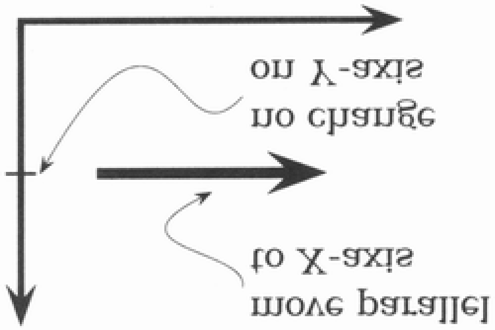

I l@ve RuBoard
Pragmatic Programmer, The: From Journeyman to Master
Andrew Hunt
David Thomas
Publisher: Addison Wesley
First Edition October 13, 1999
ISBN: 0-201-61622-X, 352 pages
Straight from the programming trenches, The Pragmatic Programmer cuts through the increasing
specialization and technicalities of modern software development to examine the core process--taking
a requirement and producing working, maintainable code that delights its users. It covers topics
ranging from personal responsibility and career development to architectural techniques for keeping
your code flexible and easy to adapt and reuse. Read this book, and you’ll learn how to:
Fight software rot;
Avoid the trap of duplicating knowledge;
Write flexible, dynamic, and adaptable code;
Avoid programming by coincidence;
Bullet-proof your code with contracts, assertions, and exceptions;

Capture real requirements;
Test ruthlessly and effectively;
Delight your users;
Build teams of pragmatic programmers; and
Make your developments more precise with automation.
Written as a series of self-contained sections and filled with entertaining anecdotes, thoughtful
examples, and interesting analogies, The Pragmatic Programmer illustrates the best practices and
major pitfalls of many different aspects of software development. Whether you’re a new coder, an
experienced programmer, or a manager responsible for software projects, use these lessons daily,
and you’ll quickly see improvements in personal productivity, accuracy, and job satisfaction. You’ll
learn skills and develop habits and attitudes that form the foundation for long-term success in your
career. You’ll become a Pragmatic Programmer.
I l@ve RuBoard


I l@ve RuBoard
Pragmatic Programmer, The: From Journeyman to Master
What Makes a Pragmatic Programmer?
Individual Pragmatists, Large Teams
But My Team Isn't Using Source Code Control
When You Can't Balance Resources
Decoupling and the Law of Demeter


I l@ve RuBoard


I l@ve RuBoard
Pragmatic Programmer, The: From Journeyman to Master
Many of the designations used by manufacturers and sellers to distinguish
their products are claimed as trademarks. Where those designations appear
in this book, and Addison-Wesley was aware of a trademark claim, the
designations have been printed in initial capital letters or in all capitals.
Lyrics from the song "The Boxer" on page 157 are Copyright © 1968 Paul
Simon. Used by permission of the Publisher: Paul Simon Music. Lyrics from
the song "Alice's Restaurant" on page 220 are by Arlo Guthrie, ©1966,
1967 (renewed) by Appleseed Music Inc. All Rights Reserved. Used by
Permission.
The authors and publisher have taken care in the preparation of this book,
but make no express or implied warranty of any kind and assume no
responsibility for errors or omissions. No liability is assumed for incidental or
consequential damages in connection with or arising out of the use of the
information or programs contained herein.
The publisher offers discounts on this book when ordered in quantity for
special sales. For more information, please contact:
AWL Direct Sales
Addison Wesley Longman, Inc.
One Jacob Way
Reading, Massachusetts 01867
(781) 944-3700
Visit AWL on the Web: http://www.awl.com/cseng
Library of Congress Catalogtng-in-Publication Data
Hunt, Andrew, 1964–
The Pragmatic Programmer / Andrew Hunt, David Thomas.
p. cm.
Includes bibliographical references.
ISBN 0-201-61622-X
1. Computer programming. I. Thomas, David, 1956– .
II. Title.
QA76.6.H857 1999
005.1--dc21 99–43581
CIP
Copyright © 2000 by Addison Wesley Longman, Inc.
All rights reserved. No part of this publication may be reproduced, stored in
a retrieval system, or transmitted, in any form or by any means, electronic,
mechanical, photocopying, recording, or otherwise, without the prior written
permission of the publisher. Printed in the United States of America.
Published simultaneously in Canada.
3 4 5 6 7 8 9 10—CRS—03020100
Third printing, October 2000
For Ellie and Juliet,
Elizabeth and Zachay,


Stuart and Henry
I l@ve RuBoard


I l@ve RuBoard
Foreword
As a reviewer I got an early opportunity to read the book you are holding. It was great,
even in draft form. Dave Thomas and Andy Hunt have something to say, and they know
how to say it. I saw what they were doing and I knew it would work. I asked to write this
foreword so that I could explain why.
Simply put, this book tells you how to program in a way that you can follow. You wouldn't
think that that would be a hard thing to do, but it is. Why? For one thing, not all
programming books are written by programmers. Many are compiled by language
designers, or the journalists who work with them to promote their creations. Those books
tell you how to talk in a programming language—which is certainly important, but that is
only a small part of what a programmer does.
What does a programmer do besides talk in programming language? Well, that is a deeper
issue. Most programmers would have trouble explaining what they do. Programming is a
job filled with details, and keeping track of those details requires focus. Hours drift by and
the code appears. You look up and there are all of those statements. If you don't think
carefully, you might think that programming is just typing statements in a programming
language. You would be wrong, of course, but you wouldn't be able to tell by looking
around the programming section of the bookstore.
In The Pragmatic Programmer Dave and Andy tell us how to program in a way that we
can follow. How did they get so smart? Aren't they just as focused on details as other
programmers? The answer is that they paid attention to what they were doing while they
were doing it—and then they tried to do it better.
Imagine that you are sitting in a meeting. Maybe you are thinking that the meeting could go
on forever and that you would rather be programming. Dave and Andy would be thinking
about why they were having the meeting, and wondering if there is something else they
could do that would take the place of the meeting, and deciding if that something could be
automated so that the work of the meeting just happens in the future. Then they would do
it.
That is just the way Dave and Andy think. That meeting wasn't something keeping them
from programming. It was programming. And it was programming that could be improved. I
know they think this way because it is tip number two: Think About Your Work.
So imagine that these guys are thinking this way for a few years. Pretty soon they would
have a collection of solutions. Now imagine them using their solutions in their work for a
few more years, and discarding the ones that are too hard or don't always produce results.
Well, that approach just about defines pragmatic. Now imagine them taking a year or two
more to write their solutions down. You might think, That information would be a gold
mine. And you would be right.
The authors tell us how they program. And they tell us in a way that we can follow. But
there is more to this second statement than you might think. Let me explain.
The authors have been careful to avoid proposing a theory of software development. This
is fortunate, because if they had they would be obliged to warp each chapter to defend
their theory. Such warping is the tradition in, say, the physical sciences, where theories
eventually become laws or are quietly discarded. Programming on the other hand has few
(if any) laws. So programming advice shaped around wanna-be laws may sound good in
writing, but it fails to satisfy in practice. This is what goes wrong with so many methodology
books.
I've studied this problem for a dozen years and found the most promise in a device called a
pattern language. In short, a pattern is a solution, and a pattern language is a system of
solutions that reinforce each other. A whole community has formed around the search for
these systems.
This book is more than a collection of tips. It is a pattern language in sheep's clothing. I say
that because each tip is drawn from experience, told as concrete advice, and related to
others to form a system. These are the characteristics that allow us to learn and follow a
pattern language. They work the same way here.
You can follow the advice in this book because it is concrete. You won't find vague
abstractions. Dave and Andy write directly for you, as if each tip was a vital strategy for
energizing your programming career. They make it simple, they tell a story, they use a light
touch, and then they follow that up with answers to questions that will come up when you
try.
And there is more. After you read ten or fifteen tips you will begin to see an extra
dimension to the work. We sometimes call it QWAN, short for the quality without a name.
The book has a philosophy that will ooze into your consciousness and mix with your own. It
doesn't preach. It just tells what works. But in the telling more comes through. That's the
beauty of the book: It embodies its philosophy, and it does so unpretentiously.

So here it is: an easy to read—and use—book about the whole practice of programming.
I've gone on and on about why it works. You probably only care that it does work. It does.
You will see.
— Ward Cunningham
I l@ve RuBoard


I l@ve RuBoard
Preface
This book will help you become a better programmer.
It doesn't matter whether you are a lone developer, a member of a large project team, or a
consultant working with many clients at once. This book will help you, as an individual, to
do better work. This book isn't theoretical—we concentrate on practical topics, on using
your experience to make more informed decisions. The word pragmatic comes from the
Latin pragmaticus—"skilled in business"—which itself is derived from the Greek
, meaning "to do." This is a book about doing.
Programming is a craft. At its simplest, it comes down to getting a computer to do what you
want it to do (or what your user wants it to do). As a programmer, you are part listener, part
advisor, part interpreter, and part dictator. You try to capture elusive requirements and find
a way of expressing them so that a mere machine can do them justice. You try to
document your work so that others can understand it, and you try to engineer your work so
that others can build on it. What's more, you try to do all this against the relentless ticking
of the project clock. You work small miracles every day.
It's a difficult job.
There are many people offering you help. Tool vendors tout the miracles their products
perform. Methodology gurus promise that their techniques guarantee results. Everyone
claims that their programming language is the best, and every operating system is the
answer to all conceivable ills.
Of course, none of this is true. There are no easy answers. There is no such thing as a
best solution, be it a tool, a language, or an operating system. There can only be systems
that are more appropriate in a particular set of circumstances.
This is where pragmatism comes in. You shouldn't be wedded to any particular technology,
but have a broad enough background and experience base to allow you to choose good
solutions in particular situations. Your background stems from an understanding of the
basic principles of computer science, and your experience comes from a wide range of
practical projects. Theory and practice combine to make you strong.
You adjust your approach to suit the current circumstances and environment. You judge


the relative importance of all the factors affecting a project and use your experience to
produce appropriate solutions. And you do this continuously as the work progresses.
Pragmatic Programmers get the job done, and do it well.
I l@ve RuBoard


I l@ve RuBoard
Who Should Read This Book?
This book is aimed at people who want to become more effective and more productive
programmers. Perhaps you feel frustrated that you don't seem to be achieving your
potential. Perhaps you look at colleagues who seem to be using tools to make themselves
more productive than you. Maybe your current job uses older technologies, and you want
to know how newer ideas can be applied to what you do.
We don't pretend to have all (or even most) of the answers, nor are all of our ideas
applicable in all situations. All we can say is that if you follow our approach, you'll gain
experience rapidly, your productivity will increase, and you'll have a better understanding of
the entire development process. And you'll write better software.
I l@ve RuBoard


I l@ve RuBoard
What Makes a Pragmatic Programmer?
Each developer is unique, with individual strengths and weaknesses, preferences and
dislikes. Over time, each will craft his or her own personal environment. That environment
will reflect the programmer's individuality just as forcefully as his or her hobbies, clothing,
or haircut. However, if you're a Pragmatic Programmer, you'll share many of the following
characteristics:
Early adopter/fast adapter. You have an instinct for technologies and
techniques, and you love trying things out. When given something new, you can
grasp it quickly and integrate it with the rest of your knowledge. Your confidence is
born of experience.
Inquisitive. You tend to ask questions. That's neat—how did you do that? Did
you have problems with that library? What's this BeOS I've heard about? How
are symbolic links implemented? You are a pack rat for little facts, each of which
may affect some decision years from now.
Critical thinker. You rarely take things as given without first getting the facts.
When colleagues say "because that's the way it's done," or a vendor promises the
solution to all your problems, you smell a challenge.
Realistic. You try to understand the underlying nature of each problem you face.
This realism gives you a good feel for how difficult things are, and how long things
will take. Understanding for yourself that a process should be difficult or will take a
while to complete gives you the stamina to keep at it.
Jack of all trades. You try hard to be familiar with a broad range of technologies
and environments, and you work to keep abreast of new developments. Although
your current job may require you to be a specialist, you will always be able to move
on to new areas and new challenges.
We've left the most basic characteristics until last. All Pragmatic Programmers share them.
They're basic enough to state as tips:
Tip 1


Care About Your Craft
We feel that there is no point in developing software unless you care about doing it well.
Tip 2
Think! About Your Work
In order to be a Pragmatic Programmer, we're challenging you to think about what you're
doing while you're doing it. This isn't a one-time audit of current practices—it's an ongoing
critical appraisal of every decision you make, every day, and on every development. Never
run on auto-pilot. Constantly be thinking, critiquing your work in real time. The old IBM
corporate motto, THINK!, is the Pragmatic Programmer's mantra.
If this sounds like hard work to you, then you're exhibiting the realistic characteristic. This
is going to take up some of your valuable time—time that is probably already under
tremendous pressure. The reward is a more active involvement with a job you love, a
feeling of mastery over an increasing range of subjects, and pleasure in a feeling of
continuous improvement. Over the long term, your time investment will be repaid as you
and your team become more efficient, write code that's easier to maintain, and spend less
time in meetings.
I l@ve RuBoard


I l@ve RuBoard
Individual Pragmatists, Large Teams
Some people feel that there is no room for individuality on large teams or complex projects.
"Software construction is an engineering discipline," they say, "that breaks down if
individual team members make decisions for themselves."
We disagree.
The construction of software should be an engineering discipline. However, this doesn't
preclude individual craftsmanship. Think about the large cathedrals built in Europe during
the Middle Ages. Each took thousands of person-years of effort, spread over many
decades. Lessons learned were passed down to the next set of builders, who advanced
the state of structural engineering with their accomplishments. But the carpenters,
stonecutters, carvers, and glass workers were all craftspeople, interpreting the engineering
requirements to produce a whole that transcended the purely mechanical side of the
construction. It was their belief in their individual contributions that sustained the projects:
We who cut mere stones must always be envisioning cathedrals.
—Quarry worker's creed
Within the overall structure of a project there is always room for individuality and
craftsmanship. This is particularly true given the current state of software engineering. One
hundred years from now, our engineering may seem as archaic as the techniques used by
medieval cathedral builders seem to today's civil engineers, while our craftsmanship will
still be honored.
I l@ve RuBoard


I l@ve RuBoard
It's a Continuous Process
A tourist visiting England's Eton College asked the gardener how he got the lawns so
perfect. "That's easy," he replied, "You just brush off the dew every morning, mow
them every other day, and roll them once a week."
"Is that all?" asked the tourist.
"Absolutely," replied the gardener. "Do that for 500 years and you'll have a nice lawn,
too."
Great lawns need small amounts of daily care, and so do great programmers.
Management consultants like to drop the word kaizen in conversations. "Kaizen" is a
Japanese term that captures the concept of continuously making many small
improvements. It was considered to be one of the main reasons for the dramatic gains in
productivity and quality in Japanese manufacturing and was widely copied throughout the
world. Kaizen applies to individuals, too. Every day, work to refine the skills you have and
to add new tools to your repertoire. Unlike the Eton lawns, you'll start seeing results in a
matter of days. Over the years, you'll be amazed at how your experience has blossomed
and your skills have grown.
I l@ve RuBoard


I l@ve RuBoard
How the Book Is Organized
This book is written as a collection of short sections. Each section is self-contained, and
addresses a particular topic. You'll find numerous cross references, which help put each
topic in context. Feel free to read the sections in any order—this isn't a book you need to
read front-to-back.
Occasionally you'll come across a box labeled Tip nn (such as Tip 1, "Care About Your
Craft" on page xix). As well as emphasizing points in the text, we feel the tips have a life of
their own—we live by them daily. You'll find a summary of all the tips on a pull-out card
inside the back cover.
Appendix A contains a set of resources: the book's bibliography, a list of URLs to Web
resources, and a list of recommended periodicals, books, and professional organizations.
Throughout the book you'll find references to the bibliography and to the list of URLs—such
as [KP99] and [URL 18], respectively.
We've included exercises and challenges where appropriate. Exercises normally have
relatively straightforward answers, while the challenges are more open-ended. To give you
an idea of our thinking, we've included our answers to the exercises in Appendix B, but
very few have a single correct solution. The challenges might form the basis of group
discussions or essay work in advanced programming courses.
I l@ve RuBoard


I l@ve RuBoard
What's in a Name?
"When I use a word," Humpty Dumpty said, in rather a scornful tone, "it means just
what I choose it to mean—neither more nor less."
Lewis Carroll, Through the Looking-Glass
Scattered throughout the book you'll find various bits of jargon—either perfectly good
English words that have been corrupted to mean something technical, or horrendous
made-up words that have been assigned meanings by computer scientists with a grudge
against the language. The first time we use each of these jargon words, we try to define it,
or at least give a hint to its meaning. However, we're sure that some have fallen through
the cracks, and others, such as object and relational database, are in common enough
usage that adding a definition would be boring. If you do come across a term you haven't
seen before, please don't just skip over it. Take time to look it up, perhaps on the Web, or
maybe in a computer science textbook. And, if you get a chance, drop us an e-mail and
complain, so we can add a definition to the next edition.
Having said all this, we decided to get revenge against the computer scientists.
Sometimes, there are perfectly good jargon words for concepts, words that we've decided
to ignore. Why? Because the existing jargon is normally restricted to a particular problem
domain, or to a particular phase of development. However, one of the basic philosophies of
this book is that most of the techniques we're recommending are universal: modularity
applies to code, designs, documentation, and team organization, for instance. When we
wanted to use the conventional jargon word in a broader context, it got confusing—we
couldn't seem to overcome the baggage the original term brought with it. When this
happened, we contributed to the decline of the language by inventing our own terms.
Source Code and Other Resources
Most of the code shown in this book is extracted from compilable source files, available for
download from our Web site:
http://www.pragmaticprogrammer.com
There you'll also find links to resources we find useful, along with updates to the book and
news of other Pragmatic Programmer developments.
Send Us Feedback
We'd appreciate hearing from you. Comments, suggestions, errors in the text, and
problems in the examples are all welcome. E-mail us at
ppbook@pragmaticprogrammer.com
Acknowledgments
When we started writing this book, we had no idea how much of a team effort it would end
up being.
Addison-Wesley has been brilliant, taking a couple of wet-behind-the-ears hackers and
walking us through the whole book-production process, from idea to camera-ready copy.
Many thanks to John Wait and Meera Ravindiran for their initial support, Mike Hendrickson,
our enthusiastic editor (and a mean cover designer!), Lorraine Ferrier and John Fuller for
their help with production, and the indefatigable Julie DeBaggis for keeping us all together.
Then there were the reviewers: Greg Andress, Mark Cheers, Chris Cleeland, Alistair
Cockburn, Ward Cunningham, Martin Fowler, Thanh T. Giang, Robert L. Glass, Scott
Henninger, Michael Hunter, Brian Kirby, John Lakos, Pete McBreen, Carey P. Morris,
Jared Richardson, Kevin Ruland, Eric Starr, Eric Vought, Chris Van Wyk, and Deborra
Zukowski. Without their careful comments and valuable insights, this book would be less
readable, less accurate, and twice as long. Thank you all for your time and wisdom.
The second printing of this book benefited greatly from the eagle eyes of our readers.
Many thanks to Brian Blank, Paul Boal, Tom Ekberg, Brent Fulgham, Louis Paul Hebert,
Henk-Jan Olde Loohuis, Alan Lund, Gareth McCaughan, Yoshiki Shibata, and Volker
Wurst, both for finding the mistakes and for having the grace to point them out gently.
Over the years, we have worked with a large number of progressive clients, where we
gained and refined the experience we write about here. Recently, we've been fortunate to
work with Peter Gehrke on several large projects. His support and enthusiasm for our
techniques are much appreciated.
This book was produced using LATEX, pic, Perl, dvips, ghostview, ispell, GNU make, CVS,
Emacs, XEmacs, EGCS, GCC, Java, iContract, and SmallEiffel, using the Bash and zsh
shells under Linux. The staggering thing is that all of this tremendous software is freely
available. We owe a huge "thank you" to the thousands of Pragmatic Programmers


worldwide who have contributed these and other works to us all. We'd particularly like to
thank Reto Kramer for his help with iContract.
Last, but in no way least, we owe a huge debt to our families. Not only have they put up
with late night typing, huge telephone bills, and our permanent air of distraction, but they've
had the grace to read what we've written, time after time. Thank you for letting us dream.
Andy Hunt
Dave Thomas
I l@ve RuBoard


I l@ve RuBoard
Chapter 1. A Pragmatic Philosophy
What distinguishes Pragmatic Programmers? We feel it's an attitude, a style, a philosophy
of approaching problems and their solutions. They think beyond the immediate problem,
always trying to place it in its larger context, always trying to be aware of the bigger picture.
After all, without this larger context, how can you be pragmatic? How can you make
intelligent compromises and informed decisions?
Another key to their success is that they take responsibility for everything they do, which
we discuss in The Cat Ate My Source Code. Being responsible, Pragmatic Programmers
won't sit idly by and watch their projects fall apart through neglect. In Software Entropy, we
tell you how to keep your projects pristine.
Most people find change difficult to accept, sometimes for good reasons, sometimes
because of plain old inertia. In Stone Soup and Boiled Frogs, we look at a strategy for
instigating change and (in the interests of balance) present the cautionary tale of an
amphibian that ignored the dangers of gradual change.
One of the benefits of understanding the context in which you work is that it becomes
easier to know just how good your software has to be. Sometimes near-perfection is the
only option, but often there are trade-offs involved. We explore this in Good-Enough
Software.
Of course, you need to have a broad base of knowledge and experience to pull all of this
off. Learning is a continuous and ongoing process. In Your Knowledge Portfolio, we
discuss some strategies for keeping the momentum up.
Finally, none of us works in a vacuum. We all spend a large amount of time interacting with
others. Communicate! lists ways we can do this better.
Pragmatic programming stems from a philosophy of pragmatic thinking. This chapter sets
the basis for that philosophy.
I l@ve RuBoard


I l@ve RuBoard
The Cat Ate My Source Code
The greatest of all weaknesses is the fear of appearing weak.
J. B. Bossuet, Politics from Holy Writ, 1709
One of the cornerstones of the pragmatic philosophy is the idea of taking responsibility for
yourself and your actions in terms of your career advancement, your project, and your
day-to-day work. A Pragmatic Programmer takes charge of his or her own career, and isn't
afraid to admit ignorance or error. It's not the most pleasant aspect of programming, to be
sure, but it will happen—even on the best of projects. Despite thorough testing, good
documentation, and solid automation, things go wrong. Deliveries are late. Unforeseen
technical problems come up.
These things happen, and we try to deal with them as professionally as we can. This
means being honest and direct. We can be proud of our abilities, but we must be honest
about our shortcomings—our ignorance as well as our mistakes.
Take Responsibility
Responsibility is something you actively agree to. You make a commitment to ensure that
something is done right, but you don't necessarily have direct control over every aspect of
it. In addition to doing your own personal best, you must analyze the situation for risks that
are beyond your control. You have the right not to take on a responsibility for an impossible
situation, or one in which the risks are too great. You'll have to make the call based on your
own ethics and judgment.
When you do accept the responsibility for an outcome, you should expect to be held
accountable for it. When you make a mistake (as we all do) or an error in judgment, admit it
honestly and try to offer options.
Don't blame someone or something else, or make up an excuse. Don't blame all the
problems on a vendor, a programming language, management, or your coworkers. Any
and all of these may play a role, but it is up to you to provide solutions, not excuses.
If there was a risk that the vendor wouldn't come through for you, then you should have
had a contingency plan. If the disk crashes—taking all of your source code with it—and you
don't have a backup, it's your fault. Telling your boss "the cat ate my source code" just
won't cut it.
Tip 3
Provide Options, Don't Make Lame Excuses
Before you approach anyone to tell them why something can't be done, is late, or is
broken, stop and listen to yourself. Talk to the rubber duck on your monitor, or the cat.
Does your excuse sound reasonable, or stupid? How's it going to sound to your boss?
Run through the conversation in your mind. What is the other person likely to say? Will
they ask, "Have you tried this…" or "Didn't you consider that?" How will you respond?
Before you go and tell them the bad news, is there anything else you can try? Sometimes,
you just know what they are going to say, so save them the trouble.
Instead of excuses, provide options. Don't say it can't be done; explain what can be done
to salvage the situation. Does code have to be thrown out? Educate them on the value of
refactoring (see Refactoring). Do you need to spend time prototyping to determine the best
way to proceed (see Prototypes and Post-it Notes)? Do you need to introduce better
testing (see Code That's Easy to Test and Ruthless Testing) or automation (see
Ubiquitous Automation) to prevent it from happening again? Perhaps you need additional
resources. Don't be afraid to ask, or to admit that you need help.
Try to flush out the lame excuses before voicing them aloud. If you must, tell your cat first.
After all, if little Tiddles is going to take the blame….
Related sections include:


Challenges
How do you react when someone—such as a bank teller, an auto mechanic, or a
clerk—comes to you with a lame excuse? What do you think of them and their
company as a result?
I l@ve RuBoard


I l@ve RuBoard
Software Entropy
While software development is immune from almost all physical laws, entropy hits us hard.
Entropy is a term from physics that refers to the amount of "disorder" in a system.
Unfortunately, the laws of thermodynamics guarantee that the entropy in the universe
tends toward a maximum. When disorder increases in software, programmers call it
"software rot."
There are many factors that can contribute to software rot. The most important one seems
to be the psychology, or culture, at work on a project. Even if you are a team of one, your
project's psychology can be a very delicate thing. Despite the best laid plans and the best
people, a project can still experience ruin and decay during its lifetime. Yet there are other
projects that, despite enormous difficulties and constant setbacks, successfully fight
nature's tendency toward disorder and manage to come out pretty well.
What makes the difference?
In inner cities, some buildings are beautiful and clean, while others are rotting hulks. Why?
Researchers in the field of crime and urban decay discovered a fascinating trigger
mechanism, one that very quickly turns a clean, intact, inhabited building into a smashed
and abandoned derelict [WK82].
A broken window.
One broken window, left unrepaired for any substantial length of time, instills in the
inhabitants of the building a sense of abandonment—a sense that the powers that be don't
care about the building. So another window gets broken. People start littering. Graffiti
appears. Serious structural damage begins. In a relatively short space of time, the building
becomes damaged beyond the owner's desire to fix it, and the sense of abandonment
becomes reality.
The "Broken Window Theory" has inspired police departments in New York and other
major cities to crack down on the small stuff in order to keep out the big stuff. It works:
keeping on top of broken windows, graffiti, and other small infractions has reduced the
serious crime level.
Tip 4
Don't Live with Broken Windows
Don't leave "broken windows" (bad designs, wrong decisions, or poor code) unrepaired. Fix
each one as soon as it is discovered. If there is insufficient time to fix it properly, then
board it up. Perhaps you can comment out the offending code, or display a "Not
Implemented" message, or substitute dummy data instead. Take some action to prevent
further damage and to show that you're on top of the situation.
We've seen clean, functional systems deteriorate pretty quickly once windows start
breaking. There are other factors that can contribute to software rot, and we'll touch on
some of them elsewhere, but neglect accelerates the rot faster than any other factor.
You may be thinking that no one has the time to go around cleaning up all the broken glass
of a project. If you continue to think like that, then you'd better plan on getting a dumpster,
or moving to another neighborhood. Don't let entropy win.
Putting Out Fires
By contrast, there's the story of an obscenely rich acquaintance of Andy's. His house was
immaculate, beautiful, loaded with priceless antiques, objets d'art, and so on. One day, a
tapestry that was hanging a little too close to his living room fireplace caught on fire. The
fire department rushed in to save the day—and his house. But before they dragged their
big, dirty hoses into the house, they stopped—with the fire raging—to roll out a mat
between the front door and the source of the fire.
They didn't want to mess up the carpet.
A pretty extreme case, to be sure, but that's the way it must be with software. One broken
window—a badly designed piece of code, a poor management decision that the team must
live with for the duration of the project— is all it takes to start the decline. If you find
yourself working on a project with quite a few broken windows, it's all too easy to slip into
the mindset of "All the rest of this code is crap, I'll just follow suit." It doesn't matter if the
project has been fine up to this point. In the original experiment leading to the "Broken
Window Theory," an abandoned car sat for a week untouched. But once a single window
was broken, the car was stripped and turned upside down within hours.


By the same token, if you find yourself on a team and a project where the code is pristinely
beautiful—cleanly written, well designed, and elegant—you will likely take extra special
care not to mess it up, just like the firefighters. Even if there's a fire raging (deadline,
release date, trade show demo, etc.), you don't want to be the first one to make a mess.
Related sections include:
Challenges
Help strengthen your team by surveying your computing "neighborhood." Choose
two or three "broken windows" and discuss with your colleagues what the problems
are and what could be done to fix them.
Can you tell when a window first gets broken? What is your reaction? If it was the
result of someone else's decision, or a management edict, what can you do about
it?
I l@ve RuBoard


I l@ve RuBoard
Stone Soup and Boiled Frogs
The three soldiers returning home from war were hungry. When they saw the village
ahead their spirits lifted—they were sure the villagers would give them a meal. But
when they got there, they found the doors locked and the windows closed. After many
years of war, the villagers were short of food, and hoarded what they had.
Undeterred, the soldiers boiled a pot of water and carefully placed three stones into it.
The amazed villagers came out to watch.
"This is stone soup," the soldiers explained. "Is that all you put in it?" asked the
villagers. "Absolutely—although some say it tastes even better with a few carrots…." A
villager ran off, returning in no time with a basket of carrots from his hoard.
A couple of minutes later, the villagers again asked "Is that it?"
"Well," said the soldiers, "a couple of potatoes give it body." Off ran another villager.
Over the next hour, the soldiers listed more ingredients that would enhance the soup:
beef, leeks, salt, and herbs. Each time a different villager would run off to raid their
personal stores.
Eventually they had produced a large pot of steaming soup. The soldiers removed the
stones, and they sat down with the entire village to enjoy the first square meal any of
them had eaten in months.
There are a couple of morals in the stone soup story. The villagers are tricked by the
soldiers, who use the villagers' curiosity to get food from them. But more importantly, the
soldiers act as a catalyst, bringing the village together so they can jointly produce
something that they couldn't have done by themselves—a synergistic result. Eventually
everyone wins.
Every now and then, you might want to emulate the soldiers.
You may be in a situation where you know exactly what needs doing and how to do it. The
entire system just appears before your eyes—you know it's right. But ask permission to
tackle the whole thing and you'll be met with delays and blank stares. People will form
committees, budgets will need approval, and things will get complicated. Everyone will
guard their own resources. Sometimes this is called "start-up fatigue."
It's time to bring out the stones. Work out what you can reasonably ask for. Develop it well.
Once you've got it, show people, and let them marvel. Then say "of course, it would be
better if we added…." Pretend it's not important. Sit back and wait for them to start asking
you to add the functionality you originally wanted. People find it easier to join an ongoing
success. Show them a glimpse of the future and you'll get them to rally around.[1]
[1] While doing this, you may be comforted by the line attributed to Rear Admiral Dr. Grace Hopper: "It's
easier to ask forgiveness than it is to get permission."
Tip 5
Be a Catalyst for Change
The Villagers' Side
On the other hand, the stone soup story is also about gentle and gradual deception. It's
about focusing too tightly. The villagers think about the stones and forget about the rest of
the world. We all fall for it, every day. Things just creep up on us.
We've all seen the symptoms. Projects slowly and inexorably get totally out of hand. Most
software disasters start out too small to notice, and most project overruns happen a day at
a time. Systems drift from their specifications feature by feature, while patch after patch
gets added to a piece of code until there's nothing of the original left. It's often the
accumulation of small things that breaks morale and teams.
Tip 6
Remember the Big Picture


We've never tried this—honest. But they say that if you take a frog and drop it into boiling
water, it will jump straight back out again. However, if you place the frog in a pan of cold
water, then gradually heat it, the frog won't notice the slow increase in temperature and will
stay put until cooked.
Note that the frog's problem is different from the broken windows issue discussed in
Section 2. In the Broken Window Theory, people lose the will to fight entropy because they
perceive that no one else cares. The frog just doesn't notice the change.
Don't be like the frog. Keep an eye on the big picture. Constantly review what's happening
around you, not just what you personally are doing.
Related sections include:
Challenges
While reviewing a draft of this book, John Lakos raised the following issue: The
soldiers progressively deceive the villagers, but the change they catalyze does
them all good. However, by progressively deceiving the frog, you're doing it harm.
Can you determine whether you're making stone soup or frog soup when you try to
catalyze change? Is the decision subjective or objective?
I l@ve RuBoard


I l@ve RuBoard
Good-Enough Software
Striving to better, oft we mar what's well.
King Lear 1.4
There's an old(ish) joke about a U.S. company that places an order for 100,000 integrated
circuits with a Japanese manufacturer. Part of the specification was the defect rate: one
chip in 10,000. A few weeks later the order arrived: one large box containing thousands of
ICs, and a small one containing just ten. Attached to the small box was a label that read:
"These are the faulty ones."
If only we really had this kind of control over quality. But the real world just won't let us
produce much that's truly perfect, particularly not bug-free software. Time, technology, and
temperament all conspire against us.
However, this doesn't have to be frustrating. As Ed Yourdon described in an article in IEEE
Software [You95], you can discipline yourself to write software that's good enough—good
enough for your users, for future maintainers, for your own peace of mind. You'll find that
you are more productive and your users are happier. And you may well find that your
programs are actually better for their shorter incubation.
Before we go any further, we need to qualify what we're about to say. The phrase "good
enough" does not imply sloppy or poorly produced code. All systems must meet their
users' requirements to be successful. We are simply advocating that users be given an
opportunity to participate in the process of deciding when what you've produced is good
enough.
Involve Your Users in the Trade-Off
Normally you're writing software for other people. Often you'll remember to get
requirements from them. [2] But how often do you ask them how good they want their
software to be? Sometimes there'll be no choice. If you're working on pacemakers, the
space shuttle, or a low-level library that will be widely disseminated, the requirements will
be more stringent and your options more limited. However, if you're working on a brand
new product, you'll have different constraints. The marketing people will have promises to
keep, the eventual end users may have made plans based on a delivery schedule, and
your company will certainly have cash-flow constraints. It would be unprofessional to ignore
these users' requirements simply to add new features to the program, or to polish up the
code just one more time. We're not advocating panic: it is equally unprofessional to
promise impossible time scales and to cut basic engineering corners to meet a deadline.
[2] That was supposed to be a joke!
The scope and quality of the system you produce should be specified as part of that
system's requirements.
Tip 7
Make Quality a Requirements Issue
Often you'll be in situations where trade-offs are involved. Surprisingly, many users would
rather use software with some rough edges today than wait a year for the multimedia
version. Many IT departments with tight budgets would agree. Great software today is
often preferable to perfect software tomorrow. If you give your users something to play with
early, their feedback will often lead you to a better eventual solution (see Tracer Bullets).
Know When to Stop
In some ways, programming is like painting. You start with a blank canvas and certain
basic raw materials. You use a combination of science, art, and craft to determine what to
do with them. You sketch out an overall shape, paint the underlying environment, then fill in
the details. You constantly step back with a critical eye to view what you've done. Every
now and then you'll throw a canvas away and start again.
But artists will tell you that all the hard work is ruined if you don't know when to stop. If you
add layer upon layer, detail over detail, the painting becomes lost in the paint.
Don't spoil a perfectly good program by overembellishment and over-refinement. Move on,
and let your code stand in its own right for a while. It may not be perfect. Don't worry: it
could never be perfect. (In Chapter 6, we'll discuss philosophies for developing code in an
imperfect world.)


Related sections include:
Challenges
Look at the manufacturers of the software tools and operating systems that you
use. Can you find any evidence that these companies are comfortable shipping
software they know is not perfect? As a user, would you rather (1) wait for them to
get all the bugs out, (2) have complex software and accept some bugs, or (3) opt
for simpler software with fewer defects?
Consider the effect of modularization on the delivery of software. Will it take more
or less time to get a monolithic block of software to the required quality compared
with a system designed in modules? Can you find commercial examples?
I l@ve RuBoard


I l@ve RuBoard
Your Knowledge Portfolio
An investment in knowledge always pays the best interest.
Benjamin Franklin
Ah, good old Ben Franklin—never at a loss for a pithy homily. Why, if we could just be early
to bed and early to rise, we'd be great programmers—right? The early bird might get the
worm, but what happens to the early worm?
In this case, though, Ben really hit the nail on the head. Your knowledge and experience
are your most important professional assets.
Unfortunately, they're expiring assets. [3] Your knowledge becomes out of date as new
techniques, languages, and environments are developed. Changing market forces may
render your experience obsolete or irrelevant. Given the speed at which Web-years fly by,
this can happen pretty quickly.
[3] An expiring asset is something whose value diminishes over time. Examples include a warehouse full
of bananas and a ticket to a ball game.
As the value of your knowledge declines, so does your value to your company or client. We
want to prevent this from ever happening.
Your Knowledge Portfolio
We like to think of all the facts programmers know about computing, the application
domains they work in, and all their experience as their Knowledge Portfolios. Managing a
knowledge portfolio is very similar to managing a financial portfolio:
1. Serious investors invest regularly—as a habit.
2. Diversification is the key to long-term success.
3. Smart investors balance their portfolios between conservative and high-risk,
high-reward investments.
4. Investors try to buy low and sell high for maximum return.
5. Portfolios should be reviewed and rebalanced periodically.
To be successful in your career, you must manage your knowledge portfolio using these
same guidelines.
Building Your Portfolio
Invest regularly. Just as in financial investing, you must invest in your
knowledge portfolio regularly. Even if it's just a small amount, the habit itself is as
important as the sums. A few sample goals are listed in the next section.
Diversify. The more different things you know, the more valuable you are. As a
baseline, you need to know the ins and outs of the particular technology you are
working with currently. But don't stop there. The face of computing changes
rapidly—hot technology today may well be close to useless (or at least not in
demand) tomorrow. The more technologies you are comfortable with, the better you
will be able to adjust to change.
Manage risk. Technology exists along a spectrum from risky, potentially
high-reward to low-risk, low-reward standards. It's not a good idea to invest all of
your money in high-risk stocks that might collapse suddenly, nor should you invest
all of it conservatively and miss out on possible opportunities. Don't put all your
technical eggs in one basket.
Buy low, sell high. Learning an emerging technology before it becomes popular
can be just as hard as finding an undervalued stock, but the payoff can be just as
rewarding. Learning Java when it first came out may have been risky, but it paid off
handsomely for the early adopters who are now at the top of that field.
Review and rebalance. This is a very dynamic industry. That hot technology
you started investigating last month might be stone cold by now. Maybe you need
to brush up on that database technology that you haven't used in a while. Or
perhaps you could be better positioned for that new job opening if you tried out that
other language….
Of all these guidelines, the most important one is the simplest to do:
Tip 8
Invest Regularly in Your Knowledge Portfolio
Goals
Now that you have some guidelines on what and when to add to your knowledge portfolio,
what's the best way to go about acquiring intellectual capital with which to fund your
portfolio? Here are a few suggestions.
Learn at least one new language every year. Different languages solve the
same problems in different ways. By learning several different approaches, you can
help broaden your thinking and avoid getting stuck in a rut. Additionally, learning
many languages is far easier now, thanks to the wealth of freely available software
on the Internet (see page 267).
Read a technical book each quarter. Bookstores are full of technical books on
interesting topics related to your current project. Once you're in the habit, read a
book a month. After you've mastered the technologies you're currently using,
branch out and study some that don't relate to your project.
Read nontechnical books, too. It is important to remember that computers are
used by people—people whose needs you are trying to satisfy. Don't forget the
human side of the equation.
Take classes. Look for interesting courses at your local community college or
university, or perhaps at the next trade show that comes to town.
Participate in local user groups. Don't just go and listen, but actively
participate. Isolation can be deadly to your career; find out what people are working
on outside of your company.
Experiment with different environments. If you've worked only in Windows,
play with Unix at home (the freely available Linux is perfect for this). If you've used
only makefiles and an editor, try an IDE, and vice versa.
Stay current. Subscribe to trade magazines and other journals (see page 262 for
recommendations). Choose some that cover technology different from that of your
current project.
Get wired. Want to know the ins and outs of a new language or other
technology? Newsgroups are a great way to find out what experiences other
people are having with it, the particular jargon they use, and so on. Surf the Web
for papers, commercial sites, and any other sources of information you can find.
It's important to continue investing. Once you feel comfortable with some new language or
bit of technology, move on. Learn another one.
It doesn't matter whether you ever use any of these technologies on a project, or even
whether you put them on your resume. The process of learning will expand your thinking,
opening you to new possibilities and new ways of doing things. The cross-pollination of
ideas is important; try to apply the lessons you've learned to your current project. Even if
your project doesn't use that technology, perhaps you can borrow some ideas. Get familiar
with object orientation, for instance, and you'll write plain C programs differently.
Opportunities for Learning
So you're reading voraciously, you're on top of all the latest breaking developments in your
field (not an easy thing to do), and somebody asks you a question. You don't have the
faintest idea what the answer is, and freely admit as much.
Don't let it stop there. Take it as a personal challenge to find the answer. Ask a guru. (If
you don't have a guru in your office, you should be able to find one on the Internet: see the
box on on the facing page.) Search the Web. Go to the library.[4]
[4] In this era of the Web, many people seem to have forgotten about real live libraries filled with research
material and staff.
If you can't find the answer yourself, find out who can. Don't let it rest. Talking to other
people will help build your personal network, and you may surprise yourself by finding
solutions to other, unrelated problems along the way. And that old portfolio just keeps
getting bigger….
All of this reading and researching takes time, and time is already in short supply. So you
need to plan ahead. Always have something to read in an otherwise dead moment. Time
spent waiting for doctors and dentists can be a great opportunity to catch up on your
reading—but be sure to bring your own magazine with you, or you might find yourself
thumbing through a dog-eared 1973 article about Papua New Guinea.
Critical Thinking
The last important point is to think critically about what you read and hear. You need to
ensure that the knowledge in your portfolio is accurate and unswayed by either vendor or
media hype. Beware of the zealots who insist that their dogma provides the only
answer—it may or may not be applicable to you and your project.
Never underestimate the power of commercialism. Just because a Web search engine lists
a hit first doesn't mean that it's the best match; the content provider can pay to get top
billing. Just because a bookstore features a book prominently doesn't mean it's a good
book, or even popular; they may have been paid to place it there.
Tip 9
Critically Analyze What You Read and Hear
Unfortunately, there are very few simple answers anymore. But with your extensive
portfolio, and by applying some critical analysis to the
Care and Cultivation of Gurus
With the global adoption of the Internet, gurus suddenly are as close as your
Enter key. So, how do you find one, and how do you get one to talk with you?
We find there are some simple tricks.
Know exactly what you want to ask, and be as specific as you can be.
Frame your question carefully and politely. Remember that you're asking
a favor; don't seem to be demanding an answer.
Once you've framed your questioned, stop and look again for the answer.

Pick out some keywords and search the web. Look for appropriate FAQs
(lists of frequently asked questions with answers).
Decide if you want to ask publicly or privately. Usenet news-groups are
wonderful meeting places for experts on just about any topic, but some
people are wary of these groups' public nature. Alternatively, you can
always e-mail your guru directly. Either way, use a meaningful subject
line. ("Need Help!!!" doesn't cut it.)
Sit back and be patient. People are busy, and it may take days to get a
specific answer.
Finally, please be sure to thank anyone who responds you. And if you see
people asking questions you can answer, play your part and participate.
torrent of technical publications you will read, you can understand the complex answers.
Challenges
Start learning a new language this week. Always programmed in C++? Try
Smalltalk [URL 13] or Squeak [URL 14]. Doing Java? Try Eiffel [URL 10] or TOM
[URL 15]. See page 267 for sources of other free compilers and environments.
Start reading a new book (but finish this one first') If you are doing very detailed
implementation and coding, read a book on design and architecture. If you are
doing high-level design, read a book on coding techniques.
Get out and talk technology with people who aren't Involved in your current project,
or who don't work for the same company. Network in your company cafeteria, or
maybe seek out fellow enthusiasts at a local user's group meeting.
I l@ve RuBoard


I l@ve RuBoard
Communicate!
I believe that it is better to be looked over than it is to be overlooked.
Mae West, Belle of the Nineties, 1934
Maybe we can learn a lesson from Ms. West. It's not just what you've got, but also how you
package it. Having the best ideas, the finest code, or the most pragmatic thinking is
ultimately sterile unless you can communicate with other people. A good idea is an orphan
without effective communication.
As developers, we have to communicate on many levels. We spend hours in meetings,
listening and talking. We work with end users, trying to understand their needs. We write
code, which communicates our intentions to a machine and documents our thinking for
future generations of developers. We write proposals and memos requesting and justifying
resources, reporting our status, and suggesting new approaches. And we work daily within
our teams to advocate our ideas, modify existing practices, and suggest new ones. A large
part of our day is spent communicating, so we need to do it well.
We've put together a list of ideas that we find useful.
Know What You Want to Say
Probably the most difficult part of the more formal styles of communication used in
business is working out exactly what it is you want to say. Fiction writers plot out their
books in detail before they start, but people writing technical documents are often happy to
sit down at a keyboard, enter "1. Introduction," and start typing whatever comes into their
heads next.
Plan what you want to say. Write an outline. Then ask yourself, "Does this get across
whatever I'm trying to say?" Refine it until it does.
This approach is not just applicable to writing documents. When you're faced with an
important meeting or a phone call with a major client, jot down the ideas you want to
communicate, and plan a couple of strategies for getting them across.
Know Your Audience

You're communicating only if you're conveying information. To do that, you need to
understand the needs, interests, and capabilities of your audience. We've all sat in
meetings where a development geek glazes over the eyes of the vice president of
marketing with a long monologue on the merits of some arcane technology. This isn't
communicating: it's just talking, and it's annoying.[5]
[5] The word annoy comes from the Old French enui, which also means "to bore."
Form a strong mental picture of your audience. The acrostic wisdom, shown in Figure 1.1
on the following page, may help.
Figure 1.1. The wisdom acrostic—understanding an audience
Say you want to suggest a Web-based system to allow your end users to submit bug
reports. You can present this system in many different ways, depending on your audience.
End users will appreciate that they can submit bug reports 24 hours a day without waiting
on the phone. Your marketing department will be able to use this fact to boost sales.
Managers in the support department will have two reasons to be happy: fewer staff will be
needed, and problem reporting will be automated. Finally, developers may enjoy getting
experience with Web-based client-server technologies and a new database engine. By
making the appropriate pitch to each group, you'll get them all excited about your project.
Choose Your Moment
It's six o'clock on Friday afternoon, following a week when the auditors have been in. Your
boss's youngest is in the hospital, it's pouring rain outside, and the commute home is
guaranteed to be a nightmare. This probably isn't a good time to ask her for a memory
upgrade for your PC.
As part of understanding what your audience needs to hear, you need to work out what
their priorities are. Catch a manager who's just been given a hard time by her boss
because some source code got lost, and you'll have a more receptive listener to your ideas
on source code repositories. Make what you're saying relevant in time, as well as in
content. Sometimes all it takes is the simple question "Is this a good time to talk about…?"
Choose a Style
Adjust the style of your delivery to suit your audience. Some people want a formal "just the
facts" briefing. Others like a long, wide-ranging chat before getting down to business. When
it comes to written documents, some like to receive large bound reports, while others
expect a simple memo or e-mail. If in doubt, ask.
Remember, however, that you are half of the communication transaction. If someone says
they need a paragraph describing something and you can't see any way of doing it in less
than several pages, tell them so. Remember, that kind of feedback is a form of
communication, too.
Make It Look Good
Your ideas are important. They deserve a good-looking vehicle to convey them to your
audience.
Too many developers (and their managers) concentrate solely on content when producing
written documents. We think this is a mistake. Any chef will tell you that you can slave in
the kitchen for hours only to ruin your efforts with poor presentation.
There is no excuse today for producing poor-looking printed documents. Modern word
processors (along with layout systems such as LaTeX and troff) can produce stunning
output. You need to learn just a few basic commands. If your word processor supports
style sheets, use them. (Your company may already have defined style sheets that you can
use.) Learn how to set page headers and footers. Look at the sample documents included
with your package to get ideas on style and layout. Check the spelling, first automatically
and then by hand. After awl, their are spelling miss steaks that the chequer can knot ketch.
Involve Your Audience
We often find that the documents we produce end up being less important than the
process we go through to produce them. If possible, involve your readers with early drafts
of your document. Get their feedback, and pick their brains. You'll build a good working
relationship, and you'll probably produce a better document in the process.
Be a Listener
There's one technique that you must use if you want people to listen to you: listen to them.
Even if this is a situation where you have all the information, even if this is a formal
meeting with you standing in front of 20 suits—if you don't listen to them, they won't listen
to you.
Encourage people to talk by asking questions, or have them summarize what you tell them.
Turn the meeting into a dialog, and you'll make your point more effectively. Who knows,
you might even learn something.
Get Back to People
If you ask someone a question, you feel they're impolite if they don't respond. But how
often do you fail to get back to people when they send you an e-mail or a memo asking for
information or requesting some action? In the rush of everyday life, it's easy to forget.
Always respond to e-mails and voice mails, even if the response is simply "I'll get back to
you later." Keeping people informed makes them far more forgiving of the occasional slip,
and makes them feel that you haven't forgotten them.
Tip 10
It's Both What You Say and the Way You Say It
Unless you work in a vacuum, you need to be able to communicate. The more effective
that communication, the more influential you become.
E-Mail Communication
Everything we've said about communicating in writing applies equally to
electronic mail. E-mail has evolved to the point where it is main-stay of intra- and
intercorporate communications. E-mail is used to discuss contracts, to settle
disputes, and as evidence in court. But for some reason, people who would


never send out a shabby paper document are happy to fling nasty-looking e-mail
around the world.
Our e-mail tips are simple:
Proofread before you hit
.
Check the spelling.
Keep the format simple. Some people read e-mail using proportional
fonts, so the ASCII art pictures you laboriously created will look to them
like hen-scratchings.
Use rich-text or HTML formatted mail only if you know that all your
recipients can read it. Plain text is universal.
Try to keep quoting to a minimum. No one likes to recieve back their own
100-line e-mail with "I agree" tacked on.
If you're quoting other people's e-mail, be sure to attribute it, and quote it
inline (rather than as an attachment).
Don't flame unless you want it to come back and haunt you later.
Check your list of recipients before sending. A recent Wall Street
Journal article described an employee who took to distributing criticisms
of his boss over departmental e-mail. without realizing that his boss was
included on the distribution list.
Archive and organize your e-mail–both the import stuff you receive and
the mail you send.
As various microsoft and Netscape employees discovered during the 1999
Department of Justice investigation, e-mail is forever. Try to give the same
attention and care to e-mail as you would to any written memo or report.
I l@ve RuBoard


I l@ve RuBoard
Summary
Know what you want to say.
Know your audience.
Choose your moment.
Choose a style.
Make it look good.
Involve your audience.
Be a listener.
Get back to people.
Related sections include:
Challenges
There are several good books that contain sections on communications within
development teams [Bro95, McC95, DL99]. Make it a point to try to read all three
over the next 18 months. In addition, the book Dinosaur Brains [Ber96] discusses
the emotional baggage we all bring to the work environment.
The next time you have to give a presentation, or write a memo advocating some
position, try working through the wisdom acrostic before you start. See if it helps
you understand how to position what you say. If appropriate, talk to your audience
afterward and see how accurate your assessment of their needs was.
I l@ve RuBoard


I l@ve RuBoard
Chapter 2. A Pragmatic Approach
There are certain tips and tricks that apply at all levels of software development, ideas that
are almost axiomatic, and processes that are virtually universal. However, these
approaches are rarely documented as such; you'll mostly find them written down as odd
sentences in discussions of design, project management, or coding.
In this chapter we'll bring these ideas and processes together. The first two sections, The
Evils of Duplication and Orthogonality, are closely related. The first warns you not to
duplicate knowledge throughout your systems, the second not to split any one piece of
knowledge across multiple system components.
As the pace of change increases, it becomes harder and harder to keep our applications
relevant. In Reversibility, we'll look at some techniques that help insulate your projects
from their changing environment.
The next two sections are also related. In Tracer Bullets, we talk about a style of
development that allows you to gather requirements, test designs, and implement code at
the same time. If this sounds too good to be true, it is: tracer bullet developments are not
always applicable. When they're not, Prototypes and Post-it Notes shows you how to use
prototyping to test architectures, algorithms, interfaces, and ideas.
As computer science slowly matures, designers are producing increasingly higher-level
languages. While the compiler that accepts "make it so" hasn't yet been invented, in
Domain Languages we present some more modest suggestions that you can implement
for yourself.
Finally, we all work in a world of limited time and resources. You can survive both of these
scarcities better (and keep your bosses happier) if you get good at working out how long
things will take, which we cover in Estimating.
By keeping these fundamental principles in mind during development, you can write code
that's better, faster, and stronger. You can even make it look easy.
I l@ve RuBoard


I l@ve RuBoard
The Evils of Duplication
Giving a computer two contradictory pieces of knowledge was Captain James T. Kirk's
preferred way of disabling a marauding artificial intelligence. Unfortunately, the same
principle can be effective in bringing down your code.
As programmers, we collect, organize, maintain, and harness knowledge. We document
knowledge in specifications, we make it come alive in running code, and we use it to
provide the checks needed during testing.
Unfortunately, knowledge isn't stable. It changes—often rapidly. Your understanding of a
requirement may change following a meeting with the client. The government changes a
regulation and some business logic gets outdated. Tests may show that the chosen
algorithm won't work. All this instability means that we spend a large part of our time in
maintenance mode, reorganizing and reexpressing the knowledge in our systems.
Most people assume that maintenance begins when an application is released, that
maintenance means fixing bugs and enhancing features. We think these people are wrong.
Programmers are constantly in maintenance mode. Our understanding changes day by
day. New requirements arrive as we're designing or coding. Perhaps the environment
changes. Whatever the reason, maintenance is not a discrete activity, but a routine part of
the entire development process.
When we perform maintenance, we have to find and change the representations of
things—those capsules of knowledge embedded in the application. The problem is that it's
easy to duplicate knowledge in the specifications, processes, and programs that we
develop, and when we do so, we invite a maintenance nightmare—one that starts well
before the application ships.
We feel that the only way to develop software reliably, and to make our developments
easier to understand and maintain, is to follow what we call the DRY principle:
Every piece of knowledge must have a single, unambiguous, authoritative
representation within a system.
Why do we call it DRY?
Tip 11
DRY— D on't R epeat Y ourself
The alternative is to have the same thing expressed in two or more places. If you change
one, you have to remember to change the others, or, like the alien computers, your
program will be brought to its knees by a contradiction. It isn't a question of whether you'll
remember: it's a question of when you'll forget.
You'll find the DRY principle popping up time and time again throughout this book, often in
contexts that have nothing to do with coding. We feel that it is one of the most important
tools in the Pragmatic Programmer's tool box.
In this section we'll outline the problems of duplication and suggest general strategies for
dealing with it.
How Does Duplication Arise?
Most of the duplication we see falls into one of the following categories:
Imposed duplication. Developers feel they have no choice—the environment
seems to require duplication.
Inadvertent duplication. Developers don't realize that they are duplicating
information.
Impatient duplication. Developers get lazy and duplicate because it seems
easier.
Interdeveloper duplication. Multiple people on a team (or on different teams)
duplicate a piece of information.
Let's look at these four i's of duplication in more detail.
Imposed Duplication
Sometimes, duplication seems to be forced on us. Project standards may require
documents that contain duplicated information, or documents that duplicate information in
the code. Multiple target platforms each require their own programming languages,
libraries, and development environments, which makes us duplicate shared definitions and
procedures. Programming languages themselves require certain structures that duplicate
information. We have all worked in situations where we felt powerless to avoid duplication.
And yet often there are ways of keeping each piece of knowledge in one place, honoring
the DRY principle, and making our lives easier at the same time. Here are some
techniques:
Multiple representations of information. At the coding level, we often need to have
the same information represented in different forms. Maybe we're writing a client-server
application, using different languages on the client and server, and need to represent some
shared structure on both. Perhaps we need a class whose attributes mirror the schema of
a database table. Maybe you're writing a book and want to include excerpts of programs
that you also will compile and test.
With a bit of ingenuity you can normally remove the need for duplication. Often the answer
is to write a simple filter or code generator. Structures in multiple languages can be built
from a common metadata representation using a simple code generator each time the
software is built (an example of this is shown in Figure 3.4). Class definitions can be
generated automatically from the online database schema, or from the metadata used to
build the schema in the first place. The code extracts in this book are inserted by a
preprocessor each time we format the text. The trick is to make the process active: this
cannot be a one-time conversion, or we're back in a position of duplicating data.
Documentation in code. Programmers are taught to comment their code: good code
has lots of comments. Unfortunately, they are never taught why code needs comments:
bad code requires lots of comments.
The DRY principle tells us to keep the low-level knowledge in the code, where it belongs,
and reserve the comments for other, high-level explanations. Otherwise, we're duplicating
knowledge, and every change means changing both the code and the comments. The
comments will inevitably become out of date, and untrustworthy comments are worse than
no comments at all. (See It's All Writing, for more information on comments.)
Documentation and code. You write documentation, then you write code. Something
changes, and you amend the documentation and update the code. The documentation and
code both contain representations of the same knowledge. And we all know that in the heat
of the moment, with deadlines looming and important clients clamoring, we tend to defer
the updating of documentation.
Dave once worked on an international telex switch. Quite understandably, the client
demanded an exhaustive test specification and required that the software pass all tests on
each delivery. To ensure that the tests accurately reflected the specification, the team
generated them programmatically from the document itself. When the client amended their
specification, the test suite changed automatically. Once the team convinced the client that
the procedure was sound, generating acceptance tests typically took only a few seconds.
Language issues. Many languages impose considerable duplication in the source.
Often this comes about when the language separates a module's interface from its
implementation. C and C++ have header files that duplicate the names and type
information of exported variables, functions, and (for C++) classes. Object Pascal even
duplicates this information in the same file. If you are using remote procedure calls or
CORBA [URL 29], you'll duplicate interface information between the interface specification
and the code that implements it.
There is no easy technique for overcoming the requirements of a language. While some
development environments hide the need for header files by generating them
automatically, and Object Pascal allows you to abbreviate repeated function declarations,
you are generally stuck with what you're given. At least with most language-based issues,
a header file that disagrees with the implementation will generate some form of compilation
or linkage error. You can still get things wrong, but at least you'll be told about it fairly early
on.
Think also about comments in header and implementation files. There is absolutely no
point in duplicating a function or class header comment between the two files. Use the
header files to document interface issues, and the implementation files to document the
nitty-gritty details that users of your code don't need to know.
Inadvertent Duplication
Sometimes, duplication comes about as the result of mistakes in the design.
Let's look at an example from the distribution industry. Say our analysis reveals that,
among other attributes, a truck has a type, a license number, and a driver. Similarly, a
delivery route is a combination of a route, a truck, and a driver. We code up some classes
based on this understanding.
But what happens when Sally calls in sick and we have to change drivers? Both Truck and
DeliveryRoute contain a driver. Which one do we change? Clearly this duplication is bad.
Normalize it according to the underlying business model—does a truck really have a driver
as part of its underlying attribute set? Does a route? Or maybe there needs to be a third
object that knits together a driver, a truck, and a route. Whatever the eventual solution,
avoid this kind of unnormalized data.
There is a slightly less obvious kind of unnormalized data that occurs when we have
multiple data elements that are mutually dependent. Let's look at a class representing a
line:
class Line {
public:
Point start;
Point end;
double length;
};
At first sight, this class might appear reasonable. A line clearly has a start and end, and will
always have a length (even if it's zero). But we have duplication. The length is defined by
the start and end points: change one of the points and the length changes. It's better to
make the length a calculated field:
class Line {
public:
Point start;
Point end;
double length() { return start.distanceTo(end); }
};
Later on in the development process, you may choose to violate the DRY principle for
performance reasons. Frequently this occurs when you need to cache data to avoid
repeating expensive operations. The trick is to localize the impact. The violation is not
exposed to the outside world: only the methods within the class have to worry about
keeping things straight.
class Line {
private:
bool changed;
double length;
Point start;
Point end;
public:
void setStart(Point p) { start = p; changed = true; }
void setEnd(Point p) { end = p; changed = true; }
Point getStart(void) { return start; }
Point getEnd(void) { return end; }
double getLength() {
if (changed) {
length = start.distanceTo(end);
changed = false;
}
return length;
}
};
This example also illustrates an important issue for object-oriented languages such as Java
and C++. Where possible, always use accessor functions to read and write the attributes of
objects.[1] It will make it easier to add functionality, such as caching, in the future.
[1] The use of accessor functions ties in with Meyer's Uniform Access principle |Mey97b], which states
that "All services offered by a module should be available through a uniform notation, which does not
betray whether they are Implemented through storage or through computation."
Impatient Duplication
Every project has time pressures—forces that can drive the best of us to take shortcuts.
Need a routine similar to one you've written? You'll be tempted to copy the original and
make a few changes. Need a value to represent the maximum number of points? If I
change the header file, the whole project will get rebuilt. Maybe I should just use a literal
number here; and here; and here. Need a class like one in the Java runtime? The source is
available, so why not just copy it and make the changes you need (license provisions
notwithstanding)?
If you feel this temptation, remember the hackneyed aphorism "shortcuts make for long
delays." You may well save some seconds now, but at the potential loss of hours later.
Think about the issues surrounding the Y2K fiasco. Many were caused by the laziness of
developers not parameterizing the size of date fields or implementing centralized libraries
of date services.
Impatient duplication is an easy form to detect and handle, but it takes discipline and a
willingness to spend time up front to save pain later.
Interdeveloper Duplication
On the other hand, perhaps the hardest type of duplication to detect and handle occurs
between different developers on a project. Entire sets of functionality may be inadvertently
duplicated, and that duplication could go undetected for years, leading to maintenance
problems. We heard firsthand of a U.S. state whose governmental computer systems were
surveyed for Y2K compliance. The audit turned up more than 10,000 programs, each
containing its own version of Social Security number validation.
At a high level, deal with the problem by having a clear design, a strong technical project
leader (see Pragmatic Teams), and a well-understood division of responsibilities within the
design. However, at the module level, the problem is more insidious. Commonly needed
functionality or data that doesn't fall into an obvious area of responsibility can get
implemented many times over.
We feel that the best way to deal with this is to encourage active and frequent
communication between developers. Set up forums to discuss common problems. (On
past projects, we have set up private Usenet newsgroups to allow developers to exchange
ideas and ask questions. This provides a nonintrusive way of communicating—even across
multiple sites—while retaining a permanent history of everything said.) Appoint a team
member as the project librarian, whose job is to facilitate the exchange of knowledge. Have
a central place in the source tree where utility routines and scripts can be deposited. And
make a point of reading other people's source code and documentation, either informally or
during code reviews. You're not snooping—you're learning from them. And remember, the
access is reciprocal—don't get twisted about other people poring (pawing?) through your
code, either.
Tip 12
Make It Easy to Reuse


What you're trying to do is foster an environment where it's easier to find and reuse
existing stuff than to write it yourself. If it isn't easy, people won't do it. And if you fail to
reuse, you risk duplicating knowledge.
Related sections include:
I l@ve RuBoard



I l@ve RuBoard
Orthogonality
Orthogonality is a critical concept if you want to produce systems that are easy to design,
build, test, and extend. However, the concept of orthogonality is rarely taught directly.
Often it is an implicit feature of various other methods and techniques you learn. This is a
mistake. Once you learn to apply the principle of orthogonality directly, you'll notice an
immediate improvement in the quality of systems you produce.
What Is Orthogonality?
"Orthogonality" is a term borrowed from geometry. Two lines are orthogonal if they meet at
right angles, such as the axes on a graph. In vector terms, the two lines are independent.
Move along one of the lines, and your position projected onto the other doesn't change.
In computing, the term has come to signify a kind of independence or decoupling. Two or
more things are orthogonal if changes in one do not affect any of the others. In a
well-designed system, the database code will be orthogonal to the user interface: you can
change the interface without affecting the database, and swap databases without changing
the interface.
Before we look at the benefits of orthogonal systems, let's first look at a system that isn't
orthogonal.
A Nonorthogonal System
You're on a helicopter tour of the Grand Canyon when the pilot, who made the obvious
mistake of eating fish for lunch, suddenly groans and faints. Fortunately, he left you
hovering 100 feet above the ground. You rationalize that the collective pitch lever[2] controls
overall lift, so lowering it slightly will start a gentle descent to the ground. However, when
you try it, you discover that life isn't that simple. The helicopter's nose drops, and you start
to spiral down to the left. Suddenly you discover that you're flying a system where every
control input has secondary effects. Lower the left-hand lever and you need to add
compensating backward movement to the right-hand stick and push the right pedal. But
then each of these changes affects all of the other controls again. Suddenly you're juggling
an unbelievably complex system, where every change impacts all the other inputs. Your
workload is phenomenal: your hands and feet are constantly moving, trying to balance all
the interacting forces.
[2] Helicopters have four basic controls. The cyclic is the stick you hold in your right hand. Move it, and
the helicopter moves in the corresponding direction. Your left hand holds the collective pitch lever. Pull
up on this and you increase the pitch on all the blades, generating lift. At the end of the pitch lever is the
throttle. Finally you have two foot pedals, which vary the amount of tail rotor thrust and so help turn the
helicopter.
Helicopter controls are decidedly not orthogonal.
Benefits of Orthogonality
As the helicopter example illustrates, nonorthogonal systems are inherently more complex
to change and control. When components of any system are highly interdependent, there is
no such thing as a local fix.
Tip 13
Eliminate Effects Between Unrelated Things
We want to design components that are self-contained: independent, and with a single,
well-defined purpose (what Yourdon and Constantine call cohesion [YC86]). When
components are isolated from one another, you know that you can change one without
having to worry about the rest. As long as you don't change that component's external
interfaces, you can be comfortable that you won't cause problems that ripple through the
entire system.
You get two major benefits if you write orthogonal systems: increased productivity and
reduced risk.
Gain Productivity
Changes are localized, so development time and testing time are reduced. It is
easier to write relatively small, self-contained components than a single large block
of code. Simple components can be designed, coded, unit tested, and then
forgotten—there is no need to keep changing existing code as you add new code.
An orthogonal approach also promotes reuse. If components have specific,
well-defined responsibilities, they can be combined with new components in ways
that were not envisioned by their original implementors. The more loosely coupled
your systems, the easier they are to reconfigure and reengineer.
There is a fairly subtle gain in productivity when you combine orthogonal
components. Assume that one component does M distinct things and another does
N things. If they are orthogonal and you combine them, the result does M × N
things. However, if the two components are not orthogonal, there will be overlap,
and the result will do less. You get more functionality per unit effort by combining
orthogonal components.
Reduce Risk
An orthogonal approach reduces the risks inherent in any development.
Diseased sections of code are isolated. If a module is sick, it is less likely to spread
the symptoms around the rest of the system. It is also easier to slice it out and
transplant in something new and healthy.
The resulting system is less fragile. Make small changes and fixes to a particular
area, and any problems you generate will be restricted to that area.
An orthogonal system will probably be better tested, because it will be easier to
design and run tests on its components.
You will not be as tightly tied to a particular vendor, product, or platform, because
the interfaces to these third-party components will be isolated to smaller parts of the
overall development.
Let's look at some of the ways you can apply the principle of orthogonality to your work.
Project Teams
Have you noticed how some project teams are efficient, with everyone knowing what to do
and contributing fully, while the members of other teams are constantly bickering and don't
seem able to get out of each other's way?
Often this is an orthogonality issue. When teams are organized with lots of overlap,
members are confused about responsibilities. Every change needs a meeting of the entire
team, because any one of them might be affected.
How do you organize teams into groups with well-defined responsibilities and minimal
overlap? There's no simple answer. It depends partly on the project and your analysis of
the areas of potential change. It also depends on the people you have available. Our
preference is to start by separating infrastructure from application. Each major
infrastructure component (database, communications interface, middleware layer, and so
on) gets its own subteam. Each obvious division of application functionality is similarly
divided. Then we look at the people we have (or plan to have) and adjust the groupings
accordingly.
You can get an informal measure of the orthogonality of a project team's structure. Simply
see how many people need to be involved in discussing each change that is requested.
The larger the number, the less orthogonal the group. Clearly, an orthogonal team is more
efficient. (Having said this, we also encourage subteams to communicate constantly with
each other.)
Design
Most developers are familiar with the need to design orthogonal systems, although they
may use words such as modular, component-based, and layered to describe the
process. Systems should be composed of a set of cooperating modules, each of which
implements functionality independent of the others. Sometimes these components are
organized into layers, each providing a level of abstraction. This layered approach is a
powerful way to design orthogonal systems. Because each layer uses only the abstractions
provided by the layers below it, you have great flexibility in changing underlying
implementations without affecting code. Layering also reduces the risk of runaway
dependencies between modules. You'll often see layering expressed in diagrams such as

Figure 2.1 on the next page.
Figure 2.1. Typical layer diagram
There is an easy test for orthogonal design. Once you have your components mapped out,
ask yourself: If I dramatically change the requirements behind a particular function,
how many modules are affected? In an orthogonal system, the answer should be "one."[3]
Moving a button on a GUI panel should not require a change in the database schema.
Adding context-sensitive help should not change the billing subsystem.
[3] In reality, this is naive. Unless you are remarkably lucky, most real-world requirements changes will
affect multiple functions in the system. However, if you analyze the change in terms of functions, each
functional change should still ideally affect just one module.
Let's consider a complex system for monitoring and controlling a heating plant. The original
requirement called for a graphical user interface, but the requirements were changed to
add a voice response system with touchtone telephone control of the plant. In an
orthogonally designed system, you would need to change only those modules associated
with the user interface to handle this: the underlying logic of controlling the plant would
remain unchanged. In fact, if you structure your system carefully, you should be able to
support both interfaces with the same underlying code base. It's Just a View, talks about
writing decoupled code using the Model-View-Controller (MVC) paradigm, which works
well in this situation.
Also ask yourself how decoupled your design is from changes in the real world. Are you
using a telephone number as a customer identifier? What happens when the phone
company reassigns area codes? Don't rely on the properties of things you can't control.
Toolkits and Libraries
Be careful to preserve the orthogonality of your system as you introduce third-party toolkits
and libraries. Choose your technologies wisely.
We once worked on a project that required that a certain body of Java code run both locally
on a server machine and remotely on a client machine. The alternatives for distributing
classes this way were RMI and CORBA. If a class were made remotely accessible using
RMI, every call to a remote method in that class could potentially throw an exception,
which means that a naive implementation would require us to handle the exception
whenever our remote classes were used. Using RMI here is clearly not orthogonal: code
calling our remote classes should not have to be aware of their locations. The
alternative—using CORBA—did not impose that restriction: we could write code that was
unaware of our classes' locations.
When you bring in a toolkit (or even a library from other members of your team), ask
yourself whether it imposes changes on your code that shouldn't be there. If an object
persistence scheme is transparent, then it's orthogonal. If it requires you to create or
access objects in a special way, then it's not. Keeping such details isolated from your code
has the added benefit of making it easier to change vendors in the future.
The Enterprise Java Beans (EJB) system is an interesting example of orthogonality. In
most transaction-oriented systems, the application code has to delineate the start and end
of each transaction. With EJB, this information is expressed declaratively as metadata,
outside any code. The same application code can run in different EJB transaction
environments with no change. This is likely to be a model for many future environments.
Another interesting twist on orthogonality is Aspect-Oriented Programming (AOP), a
+
research project at Xerox Parc ([KLM 97] and [URL 49]). AOP lets you express in one
place behavior that would otherwise be distributed throughout your source code. For
example, log messages are normally generated by sprinkling explicit calls to some log
function throughout your source. With AOP, you implement logging orthogonally to the
things being logged. Using the Java version of AOP, you could write a log message when
entering any method of class Fred by coding the aspect:
aspect Trace {
advise * Fred.*(..) {
static before {
Log.write("-> Entering " + thisJoinPoint.methodName);
}
}
}
If you weave this aspect into your code, trace messages will be generated. If you don't,
you'll see no messages. Either way, your original source is unchanged.
Coding
Every time you write code you run the risk of reducing the orthogonality of your application.
Unless you constantly monitor not just what you are doing but also the larger context of the
application, you might unintentionally duplicate functionality in some other module, or
express existing knowledge twice.
There are several techniques you can use to maintain orthogonality:
Keep your code decoupled. Write shy code—modules that don't reveal
anything unnecessary to other modules and that don't rely on other modules'
implementations. Try the Law of Demeter [LH89], which we discuss in Decoupling
and the Law of Demeter. If you need to change an object's state, get the object to
do it for you. This way your code remains isolated from the other code's
implementation and increases the chances that you'll remain orthogonal.
Avoid global data. Every time your code references global data, it ties itself into
the other components that share that data. Even globals that you intend only to
read can lead to trouble (for example, if you suddenly need to change your code to
be multithreaded). In general, your code is easier to understand and maintain if you
explicitly pass any required context into your modules. In object-oriented
applications, context is often passed as parameters to objects' constructors. In
other code, you can create structures containing the context and pass around
references to them.
The Singleton pattern in Design Patterns [GHJV95] is a way of ensuring that there
is only one instance of an object of a particular class. Many people use these
singleton objects as a kind of global variable (particularly in languages, such as
Java, that otherwise do not support the concept of globals). Be careful with
singletons—they can also lead to unnecessary linkage.
Avoid similar functions. Often you'll come across a set of functions that all look
similar—maybe they share common code at the start and end, but each has a
different central algorithm. Duplicate code is a symptom of structural problems.
Have a look at the Strategy pattern in Design Patterns for a better implementation.
Get into the habit of being constantly critical of your code. Look for any opportunities to
reorganize it to improve its structure and orthogonality. This process is called refactoring,
and it's so important that we've dedicated a section to it (see Refactoring).
Testing
An orthogonally designed and implemented system is easier to test. Because the
interactions between the system's components are formalized and limited, more of the
system testing can be performed at the individual module level. This is good news,
because module level (or unit) testing is considerably easier to specify and perform than
integration testing. In fact, we suggest that every module have its own unit test built into its
code, and that these tests be performed automatically as part of the regular build process
(see Code That's Easy to Test).
Building unit tests is itself an interesting test of orthogonality. What does it take to build and
link a unit test? Do you have to drag in a large percentage of the rest of the system just to
get a test to compile or link? If so, you've found a module that is not well decoupled from
the rest of the system.
Bug fixing is also a good time to assess the orthogonality of the system as a whole. When
you come across a problem, assess how localized the fix is. Do you change just one
module, or are the changes scattered throughout the entire system? When you make a
change, does it fix everything, or do other problems mysteriously arise? This is a good
opportunity to bring automation to bear. If you use a source code control system (and you
will after reading Source Code Control), tag bug fixes when you check the code back in
after testing. You can then run monthly reports analyzing trends in the number of source
files affected by each bug fix.
Documentation
Perhaps surprisingly, orthogonality also applies to documentation. The axes are content
and presentation. With truly orthogonal documentation, you should be able to change the
appearance dramatically without changing the content. Modern word processors provide
style sheets and macros that help (see It's All Writing).
Living with Orthogonality
Orthogonality is closely related to the DRY principle introduced on page 27. With DRY,
you're looking to minimize duplication within a system, whereas with orthogonality you
reduce the interdependency among the system's components. It may be a clumsy word,
but if you use the principle of orthogonality, combined closely with the DRY principle, you'll
find that the systems you develop are more flexible, more understandable, and easier to
debug, test, and maintain.
If you're brought into a project where people are desperately struggling to make changes,
and where every change seems to cause four other things to go wrong, remember the
nightmare with the helicopter. The project probably is not orthogonally designed and
coded. It's time to refactor.
And, if you're a helicopter pilot, don't eat the fish….
Related sections include:
Decoupling and the Law of Demeter
Challenges
Consider the difference between large GUI-oriented tools typically found on
Windows systems and small but combinable command line utilities used at shell
prompts. Which set is more orthogonal, and why? Which is easier to use for exactly
the purpose for which it was intended? Which set is easier to combine with other
tools to meet new challenges?
C++ supports multiple inheritance, and Java allows a class to implement multiple
interfaces. What impact does using these facilities have on orthogonality? Is there a
difference in impact between using multiple inheritance and multiple interfaces? Is
there a difference between using delegation and using inheritance?
Exercises
1.
You are writing a class called Split, which splits input lines into fields. Which of
the following two Java class signatures is the more orthogonal design?
class Split1 {
public Split1(InputStreamReader rdr) { ...
public void readNextLine() throws IOException { ...
public int numFields() { ...
public String getField(int fieldNo) { ...
}
class Split2 {
public Split2(String line) { ...
public int numFields() { ...
public String getField(int fieldNo) { ...
}
2.
Which will lead to a more orthogonal design: modeless or modal dialog boxes?
3.
How about procedural languages versus object technology? Which results in a


I l@ve RuBoard


I l@ve RuBoard
Reversibility
Nothing is more dangerous than an idea if it's the only one you have.
Emil-Auguste Chartier, Propos surla religion, 1938
Engineers prefer simple, single solutions to problems. Math tests that allow you to proclaim
with great confidence that x = 2 are much more comfortable than fuzzy, warm essays
about the myriad causes of the French Revolution. Management tends to agree with the
engineers: single, easy answers fit nicely on spreadsheets and project plans.
If only the real world would cooperate! Unfortunately, while x is 2 today, it may need to be 5
tomorrow, and 3 next week. Nothing is forever—and if you rely heavily on some fact, you
can almost guarantee that it will change.
There is always more than one way to implement something, and there is usually more
than one vendor available to provide a third-party product. If you go into a project
hampered by the myopic notion that there is only one way to do it, you may be in for an
unpleasant surprise. Many project teams have their eyes forcibly opened as the future
unfolds:
"But you said we'd use database XYZ! We are 85% done coding the
project, we can't change now!" the programmer protested. "Sorry, but
our company decided to standardize on database PDQ instead—for all
projects. It's out of my hands. We'll just have to recode. All of you will be
working weekends until further notice."
Changes don't have to be that Draconian, or even that immediate. But as time goes by,
and your project progresses, you may find yourself stuck in an untenable position. With
every critical decision, the project team commits to a smaller target—a narrower version of
reality that has fewer options.
By the time many critical decisions have been made, the target becomes so small that if it
moves, or the wind changes direction, or a butterfly in Tokyo flaps its wings, you miss.[4]
And you may miss by a huge amount.
[4] Take a nonlinear, or chaotic, system and apply a small change to one of its inputs. You may get a
large and often unpredictable result. The clichéd butterfly flapping its wings in Tokyo could be the start of
a chain of events that ends up generating a tornado in Texas. Does this sound like any projects you
know?
The problem is that critical decisions aren't easily reversible.
Once you decide to use this vendor's database, or that architectural pattern, or a certain
deployment model (client-server versus standalone, for instance), you are committed to a
course of action that cannot be undone, except at great expense.
Reversibility
Many of the topics in this book are geared to producing flexible, adaptable software. By
sticking to their recommendations—especially the DRY principle (page 26), decoupling
(page 138), and use of metadata (page 144)—we don't have to make as many critical,
irreversible decisions. This is a good thing, because we don't always make the best
decisions the first time around. We commit to a certain technology only to discover we can't
hire enough people with the necessary skills. We lock in a certain third-party vendor just
before they get bought out by their competitor. Requirements, users, and hardware change
faster than we can get the software developed.
Suppose you decide, early in the project, to use a relational database from vendor A. Much
later, during performance testing, you discover that the database is simply too slow, but
that the object database from vendor B is faster. With most conventional projects, you'd be
out of luck. Most of the time, calls to third-party products are entangled throughout the
code. But if you really abstracted the idea of a database out—to the point where it simply
provides persistence as a service—then you have the flexibility to change horses in
midstream.
Similarly, suppose the project begins as a client-server model, but then, late in the game,
marketing decides that servers are too expensive for some clients, and they want a
stand-alone version. How hard would that be for you? Since it's just a deployment issue, it
shouldn't take more than a few days. If it would take longer, then you haven't thought
about reversibility. The other direction is even more interesting. What if the stand-alone
product you are making needs to be deployed in a client-server or n-tier fashion? That
shouldn't be hard either.
The mistake lies in assuming that any decision is cast in stone—and in not preparing for
the contingencies that might arise. Instead of carving decisions in stone, think of them
more as being written in the sand at the beach. A big wave can come along and wipe them
out at any time.
Tip 14
There Are No Final Decisions
Flexible Architecture
While many people try to keep their code flexible, you also need to think about maintaining
flexibility in the areas of architecture, deployment, and vendor integration.
Technologies such as CORBA can help insulate portions of a project from changes in
development language or platform. Is the performance of Java on that platform not up to
expectations? Recode the client in C++, and nothing else needs to change. Is the rules
engine in C++ not flexible enough? Switch over to a Smalltalk version. With a CORBA
architecture, you have to take a hit only for the component you are replacing; the other
components shouldn't be affected.
Are you developing for Unix? Which one? Do you have all of the portability concerns
addressed? Are you developing for a particular version of Windows? Which one—3.1, 95,
98, NT, CE, or 2000? How hard will it be to support other versions? If you keep decisions
soft and pliable, it won't be hard at all. If you have poor encapsulation, high coupling, and
hard-coded logic or parameters in the code, it might be impossible.
Not sure how marketing wants to deploy the system? Think about it up front and you can
support a stand-alone, client-server, or n-tier model just by changing a configuration file.
We've written programs that do just that.
Normally, you can simply hide a third-party product behind a well-defined, abstract
interface. In fact, we've always been able to do so on any project we've worked on. But
suppose you couldn't isolate it that cleanly. What if you had to sprinkle certain statements
liberally throughout the code? Put that requirement in metadata, and use some automatic
mechanism, such as Aspects (see page 39) or Perl, to insert the necessary statements into
the code itself. Whatever mechanism you use, make it reversible. If something is added
automatically, it can be taken out automatically as well.
No one knows what the future may hold, especially not us! So enable your code to


rock-n-roll: to "rock on" when it can, to roll with the punches when it must.
Related sections include:
Decoupling and the Law of Demeter
Challenges
Time for a little quantum mechanics with Schrödinger's cat. Suppose you have a
cat in a closed box, along with a radioactive particle. The particle has exactly a 50%
chance of fissioning into two. If it does, the cat will be killed. If it doesn't, the cat will
be okay. So, is the cat dead or alive? According to Schrödinger, the correct answer
is both. Every time a sub-nuclear reaction takes place that has two possible
outcomes, the universe is cloned. In one, the event occurred, in the other it didn't.
The cat's alive in one universe, dead in another. Only when you open the box do
you know which universe you are in.
No wonder coding for the future is difficult.
But think of code evolution along the same lines as a box full of Schrödinger's cats:
every decision results in a different version of the future. How many possible
futures can your code support? Which ones are more likely? How hard will it be to
support them when the time comes?
Dare you open the box?
I l@ve RuBoard


I l@ve RuBoard
Tracer Bullets
Ready, fire, aim…
There are two ways to fire a machine gun in the dark. [5] You can find out exactly where
your target is (range, elevation, and azimuth). You can determine the environmental
conditions (temperature, humidity, air pressure, wind, and so on). You can determine the
precise specifications of the cartridges and bullets you are using, and their interactions with
the actual gun you are firing. You can then use tables or a firing computer to calculate the
exact bearing and elevation of the barrel. If everything works exactly as specified, your
tables are correct, and the environment doesn't change, your bullets should land close to
their target.
[5] To be pedantic, there are many ways of firing a machine gun in the dark, including closing your eyes
and spraying out bullets. But this is an analogy, and we're allowed to take liberties.
Or you could use tracer bullets.
Tracer bullets are loaded at intervals on the ammo belt alongside regular ammunition.
When they're fired, their phosphorus ignites and leaves a pyrotechnic trail from the gun to
whatever they hit. If the tracers are hitting the target, then so are the regular bullets.
Not surprisingly, tracer bullets are preferred to the labor of calculation. The feedback is
immediate, and because they operate in the same environment as the real ammunition,
external effects are minimized.
The analogy might be violent, but it applies to new projects, particularly when you're
building something that hasn't been built before. Like the gunners, you're trying to hit a
target in the dark. Because your users have never seen a system like this before, their
requirements may be vague. Because you may be using algorithms, techniques,
languages, or libraries you aren't familiar with, you face a large number of unknowns. And
because projects take time to complete, you can pretty much guarantee the environment
you're working in will change before you're done.
The classic response is to specify the system to death. Produce reams of paper itemizing
every requirement, tying down every unknown, and constraining the environment. Fire the
gun using dead reckoning. One big calculation up front, then shoot and hope.
Pragmatic Programmers, however, tend to prefer using tracer bullets.
Code That Glows in the Dark
Tracer bullets work because they operate in the same environment and under the same
constraints as the real bullets. They get to the target fast, so the gunner gets immediate
feedback. And from a practical standpoint they're a relatively cheap solution.
To get the same effect in code, we're looking for something that gets us from a requirement
to some aspect of the final system quickly, visibly, and repeatably.
Tip 15
Use Tracer Bullets to Find the Target
We once undertook a complex client-server database marketing project. Part of its
requirement was the ability to specify and execute temporal queries. The servers were a
range of relational and specialized databases. The client GUI, written in Object Pascal,
used a set of C libraries to provide an interface to the servers. The user's query was stored
on the server in a Lisp-like notation before being converted to optimized SQL just prior to
execution. There were many unknowns and many different environments, and no one was
too sure how the GUI should behave.
This was a great opportunity to use tracer code. We developed the framework for the front
end, libraries for representing the queries, and a structure for converting a stored query into
a database-specific query. Then we put it all together and checked that it worked. For that
initial build, all we could do was submit a query that listed all the rows in a table, but it
proved that the UI could talk to the libraries, the libraries could serialize and unserialize a
query, and the server could generate SQL from the result. Over the following months we
gradually fleshed out this basic structure, adding new functionality by augmenting each
component of the tracer code in parallel. When the UI added a new query type, the library
grew and the SQL generation was made more sophisticated.
Tracer code is not disposable: you write it for keeps. It contains all the error checking,
structuring, documentation, and self-checking that any piece of production code has. It
simply is not fully functional. However, once you have achieved an end-to-end connection
among the components of your system, you can check how close to the target you are,
adjusting if necessary. Once you're on target, adding functionality is easy.
Tracer development is consistent with the idea that a project is never finished: there will
always be changes required and functions to add. It is an incremental approach.
The conventional alternative is a kind of heavy engineering approach: code is divided into
modules, which are coded in a vacuum. Modules are combined into subassemblies, which
are then further combined, until one day you have a complete application. Only then can
the application as a whole be presented to the user and tested.
The tracer code approach has many advantages:
Users get to see something working early. If you have successfully
communicated what you are doing (see Great Expectations), your users will know
they are seeing something immature. They won't be disappointed by a lack of
functionality; they'll be ecstatic to see some visible progress toward their system.
They also get to contribute as the project progresses, increasing their buy-in. These
same users will likely be the people who'll tell you how close to the target each
iteration is.
Developers build a structure to work in. The most daunting piece of paper is
the one with nothing written on it. If you have worked out all the end-to-end
interactions of your application, and have embodied them in code, then your team
won't need to pull as much out of thin air. This makes everyone more productive,
and encourages consistency.
You have an integration platform. As the system is connected end-to-end, you
have an environment to which you can add new pieces of code once they have
been unit-tested. Rather than attempting a big-bang integration, you'll be
integrating every day (often many times a day). The impact of each new change is
more apparent, and the interactions are more limited, so debugging and testing are
faster and more accurate.
You have something to demonstrate. Project sponsors and top brass have a
tendency to want to see demos at the most inconvenient times. With tracer code,
you'll always have something to show them.
You have a better feel for progress. In a tracer code development,
developers tackle use cases one by one. When one is done, they move to the next.
It is far easier to measure performance and to demonstrate progress to your user.
Because each individual development is smaller, you avoid creating those
monolithic blocks of code that are reported as 95% complete week after week.
Tracer Bullets Don't Always Hit Their Target
Tracer bullets show what you're hitting. This may not always be the target. You then adjust
your aim until they're on target. That's the point.
It's the same with tracer code. You use the technique in situations where you're not 100%
certain of where you're going. You shouldn't be surprised if your first couple of attempts
miss: the user says "that's not what I meant," or data you need isn't available when you
need it, or performance problems seem likely. Work out how to change what you've got to
bring it nearer the target, and be thankful that you've used a lean development
methodology. A small body of code has low inertia—it is easy and quick to change. You'll
be able to gather feedback on your application and generate a new, more accurate version
faster and at less cost than with any other method. And because every major application
component is represented in your tracer code, your users can be confident that what
they're seeing is based on reality, not just a paper specification.
Tracer Code versus Prototyping
You might think that this tracer code concept is nothing more than prototyping under an
aggressive name. There is a difference. With a prototype, you're aiming to explore specific
aspects of the final system. With a true prototype, you will throw away whatever you lashed
together when trying out the concept, and recode it properly using the lessons you've
learned.
For example, say you're producing an application that helps shippers determine how to
pack odd-sized boxes into containers. Among other problems, the user interface needs to
be intuitive and the algorithms you use to determine optimal packing are very complex.
You could prototype a user interface for your end users in a GUI tool. You code only
enough to make the interface responsive to user actions. Once they've agreed to the
layout, you might throw it away and recode it, this time with the business logic behind it,
using the target language. Similarly, you might want to prototype a number of algorithms
that perform the actual packing. You might code functional tests in a high-level, forgiving
language such as Perl, and code low-level performance tests in something closer to the
machine. In any case, once you'd made your decision, you'd start again and code the


algorithms in their final environment, interfacing to the real world. This is prototyping, and it
is very useful.
The tracer code approach addresses a different problem. You need to know how the
application as a whole hangs together. You want to show your users how the interactions
will work in practice, and you want to give your developers an architectural skeleton on
which to hang code. In this case, you might construct a tracer consisting of a trivial
implementation of the container packing algorithm (maybe something like first-come,
first-served) and a simple but working user interface. Once you have all the components in
the application plumbed together, you have a framework to show your users and your
developers. Over time, you add to this framework with new functionality, completing
stubbed routines. But the framework stays intact, and you know the system will continue to
behave the way it did when your first tracer code was completed.
The distinction is important enough to warrant repeating. Prototyping generates disposable
code. Tracer code is lean but complete, and forms part of the skeleton of the final system.
Think of prototyping as the reconnaissance and intelligence gathering that takes place
before a single tracer bullet is fired.
Related sections include:
I l@ve RuBoard


I l@ve RuBoard
Prototypes and Post-it Notes
Many different industries use prototypes to try out specific ideas; prototyping is much
cheaper than full-scale production. Car makers, for example, may build many different
prototypes of a new car design. Each one is designed to test a specific aspect of the
car—the aerodynamics, styling, structural characteristics, and so on. Perhaps a clay model
will be built for wind tunnel testing, maybe a balsa wood and duct tape model will do for the
art department, and so on. Some car companies take this a step further, and now do a
great deal of modeling work on the computer, reducing costs even further. In this way, risky
or uncertain elements can be tried out without committing to building the real item.
We build software prototypes in the same fashion, and for the same reasons—to analyze
and expose risk, and to offer chances for correction at a greatly reduced cost. Like the car
makers, we can target a prototype to test one or more specific aspects of a project.
We tend to think of prototypes as code-based, but they don't always have to be. Like the
car makers, we can build prototypes out of different materials. Post-it notes are great for
prototyping dynamic things such as workflow and application logic. A user interface can be
prototyped as a drawing on a whiteboard, as a nonfunctional mock-up drawn with a paint
program, or with an interface builder.
Prototypes are designed to answer just a few questions, so they are much cheaper and
faster to develop than applications that go into production. The code can ignore
unimportant details—unimportant to you at the moment, but probably very important to the
user later on. If you are prototyping a GUI, for instance, you can get away with incorrect
results or data. On the other hand, if you're just investigating computational or performance
aspects, you can get away with a pretty poor GUI, or perhaps even no GUI at all.
But if you find yourself in an environment where you cannot give up the details, then you
need to ask yourself if you are really building a prototype at all. Perhaps a tracer bullet
style of development would be more appropriate in this case (see Tracer Bullets).
Things to Prototype
What sorts of things might you choose to investigate with a prototype? Anything that
carries risk. Anything that hasn't been tried before, or that is absolutely critical to the final
system. Anything unproven, experimental, or doubtful. Anything you aren't comfortable
with. You can prototype
Architecture
New functionality in an existing system
Structure or contents of external data
Third-party tools or components
Performance issues
User interface design
Prototyping is a learning experience. Its value lies not in the code produced, but in the
lessons learned. That's really the point of prototyping.
Tip 16
Prototype to Learn
How to Use Prototypes
When building a prototype, what details can you ignore?
Correctness. You may be able to use dummy data where appropriate.
Completeness. The prototype may function only in a very limited sense, perhaps
with only one preselected piece of input data and one menu item.
Robustness. Error checking is likely to be incomplete or missing entirely. If you
stray from the predefined path, the prototype may crash and burn in a glorious
display of pyrotechnics. That's okay.
Style. It is painful to admit this in print, but prototype code probably doesn't have
much in the way of comments or documentation. You may produce reams of
documentation as a result of your experience with the prototype, but comparatively
very little on the prototype system itself.
Since a prototype should gloss over details, and focus in on specific aspects of the system
being considered, you may want to implement prototypes using a very high-level
language—higher than the rest of the project (maybe a language such as Perl, Python, or
Tcl). A high-level scripting language lets you defer many details (including specifying data
types) and still produce a functional (albeit incomplete or slow) piece of code.[6] If you need
to prototype user interfaces, investigate tools such as Tcl/Tk, Visual Basic, Powerbuilder,
or Delphi.
[6] If you are investigating absolute (instead of relative) performance, you will need to stick to a language
that is close in performance to the target language.
Scripting languages work well as the "glue" to combine low-level pieces into new
combinations. Under Windows, Visual Basic can glue together COM controls. More
generally, you can use languages such as Perl and Python to bind together low-level C
libraries—either by hand, or automatically with tools such as the freely available SWIG
[URL 28]. Using this approach, you can rapidly assemble existing components into new
configurations to see how things work.
Prototyping Architecture
Many prototypes are constructed to model the entire system under consideration. As
opposed to tracer bullets, none of the individual modules in the prototype system need to
be particularly functional. In fact, you may not even need to code in order to prototype
architecture—you can prototype on a whiteboard, with Post-it notes or index cards. What
you are looking for is how the system hangs together as a whole, again deferring details.
Here are some specific areas you may want to look for in the architectural prototype:
Are the responsibilities of the major components well defined and appropriate?
Are the collaborations between major components well defined?
Is coupling minimized?
Can you identify potential sources of duplication?
Are interface definitions and constraints acceptable?
Does every module have an access path to the data it needs during execution?
Does it have that access when it needs it?
This last item tends to generate the most surprises and the most valuable results from the
prototyping experience.
How Not to Use Prototypes
Before you embark on any code-based prototyping, make sure that everyone understands
that you are writing disposable code. Prototypes can be deceptively attractive to people
who don't know that they are just prototypes. You must make it very clear that this code is
disposable, incomplete, and unable to be completed.
It's easy to become misled by the apparent completeness of a demonstrated prototype,
and project sponsors or management may insist on deploying the prototype (or its progeny)
if you don't set the right expectations. Remind them that you can build a great prototype of
a new car out of balsa wood and duct tape, but you wouldn't try to drive it in rush-hour
traffic!
If you feel there is a strong possibility in your environment or culture that the purpose of
prototype code may be misinterpreted, you may be better off with the tracer bullet
approach. You'll end up with a solid framework on which to base future development.
When used properly, a prototype can save you huge amounts of time, money, pain, and
suffering by identifying and correcting potential problem spots early in the development
cycle—the time when fixing mistakes is both cheap and easy.
Related sections include:
Exercises


4.
Marketing would like to sit down and brainstorm a few Web-page designs with
you. They are thinking of clickable image maps to take you to other pages, and
so on. But they can't decide on a model for the image?maybe it's a car, or a
phone, or a house. You have a list of target pages and content; they'd like to
see a few prototypes. Oh, by the way, you have 15 minutes. What tools might
I l@ve RuBoard


I l@ve RuBoard
Domain Languages
The limits of language are the limits of one's world.
Ludwig Von Wittgenstein
Computer languages influence how you think about a problem, and how you think about
communicating. Every language comes with a list of features—buzzwords such as static
versus dynamic typing, early versus late binding, inheritance models (single, multiple, or
none)—all of which may suggest or obscure certain solutions. Designing a solution with
Lisp in mind will produce different results than a solution based on C-style thinking, and
vice versa. Conversely, and we think more importantly, the language of the problem
domain may also suggest a programming solution.
We always try to write code using the vocabulary of the application domain (see The
Requirements Pit, where we suggest using a project glossary). In some cases, we can go
to the next level and actually program using the vocabulary, syntax, and semantics—the
language—of the domain.
When you listen to users of a proposed system, they might be able to tell you exactly how
the system should work:
Listen for transactions defined by ABC Regulation 12.3 on a set of X.25
lines, translate them to XYZ Company's format 43B, retransmit them on
the satellite uplink, and store for future analysis.
If your users have a number of such well-bounded statements, you can invent a
mini-language tailored to the application domain that expresses exactly what they want:
From X25LINE1 (Format=ABC123) {
Put TELSTAR1 (Format=XYZ43B);
Store DB;
}
This language need not be executable. Initially, it could be simply a way of capturing the
user's requirements—a specification. However, you may want to consider taking this a step
further and actually implementing the language. Your specification has become executable
code.
After you've written the application, the users give you a new requirement: transactions
with negative balances shouldn't be stored, and should be sent back on the X.25 lines in
the original format:
From X25LINE1 (Format=ABC123) {
if (ABC123.balance < 0) {
Put X25LINE1 (Format=ABC123);
}
else {
Put TELSTAR1 (Format=XYZ43B);
Store DB;
}
}
That was easy, wasn't it? With the proper support in place, you can program much closer
to the application domain. We're not suggesting that your end users actually program in
these languages. Instead, you're giving yourself a tool that lets you work closer to their
domain.
Tip 17
Program Close to the Problem domain
Whether it's a simple language to configure and control an application program, or a more
complex language to specify rules or procedures, we think you should consider ways of
moving your project closer to the problem domain. By coding at a higher level of
abstraction, you are free to concentrate on solving domain problems, and can ignore petty
implementation details.
Remember that there are many users of an application. There's the end user, who
understands the business rules and the required outputs. There are also secondary users:
operations staff, configuration and test managers, support and maintenance programmers,
and future generations of developers. Each of these users has their own problem domain,
and you can generate mini-environments and languages for all of them.
Domain-Specific Errors
If you are writing in the problem domain, you can also perform domain-specific
validation, reporting problems in terms your users can understand. Take our
switching application on on the facing page. Suppose the user misspelled the
format name:
From X25LINE1 (Format=AB123)
If this happened in a standard , general-purpose programming language, you
might receive a standard, general-purpose error message:
Syntax error: undeclared identifier
But with a mini-launguage, you would instead be able to issue an error message
using the vocabulary of the domain:
"AB123" is not a format. known formats are ABC123,
XYZ43B, PDQB, and 42.
Implementing a Mini-Language
At its simplest, a mini-language may be in a line-oriented, easily parsed format. In practice,
we probably use this form more than any other. It can be parsed simply using switch
statements, or using regular expressions in scripting languages such as Perl. The answer
to Exercise 5 on page 281 shows a simple implementation in C.
You can also implement a more complex language, with a more formal syntax. The trick
here is to define the syntax first using a notation such as BNF.[7] Once you have your
grammar specified, it is normally trivial to convert it into the input syntax for a parser
generator. C and C++ programmers have been using yacc (or its freely available
implementation, bison [URL 27]) for years. These programs are documented in detail in the
book Lex and Yacc [LMB92]. Java programmers can try javaCC, which can be found at
[URL 26]. The answer to Exercise 7 on page 282 shows a parser written using bison. As it
shows, once you know the syntax, it's really not a lot of work to write simple
mini-languages.
[7] BNF, or Backus-Naur Form, lets you specify context-free grammars recursively. Any good book on
compiler construction or parsing will cover BNF in (exhaustive) detail.
There's another way of implementing a mini-language: extend an existing one. For
example, you could integrate application-level functionality with (say) Python [URL 9] and
[8] Thanks to Eric Vought for this example.
record = X25LINE1.get(format=ABC123)
if (record.balance < 0):
X25LINE1.put(record, format=ABC123)
else:
TELSTAR1.put(record, format=XYZ43B)
DB.store(record)
Data Languages and Imperative Languages
The languages you implement can be used in two different ways.
Data languages produce some form of data structure used by an application. These
languages are often used to represent configuration information.
For example, the sendmail program is used throughout the world for routing e-mail over the
Internet. It has many excellent features and benefits, which are controlled by a
thousand-line configuration file, written using sendmail's own configuration language:
Mlocal, P=/usr/bin/procmail,
F=lsDFMAw5 :/|@qSPfhn9,
S=10/30, R=20/40,
T=DNS/RFC822/X-Unix,
A=procmail -Y -a $h -d $u
Obviously, readability is not one of sendmail's strengths.
For years, Microsoft has been using a data language that can describe menus, widgets,
dialog boxes, and other Windows resources. Figure 2.2 on the next page shows an excerpt

from a typical resource file. This is far easer to read than the sendmail example, but it is
used in exactly the same way—it is compiled to generate a data structure.
Figure 2.2. Windows .rc file
Imperative languages take this a step further. Here the language is actually executed, and
so can contain statements, control constructs, and the like (such as the script on page 58).
You can also use your own imperative languages to ease program maintenance. For
example, you may be asked to integrate information from a legacy application into your
new GUI development. A common way of achieving this is by screen scraping; your
application connects to the mainframe application as if it were a regular human user,
issuing keystrokes and "reading" the responses it gets back. You could script the
interaction using a mini-language.[9]
[9] In fact, you can buy tools that support just this kind of scripting. You can also investigate open-source
packages such as Expect, which provide similar capabilities [URL 24].
locate prompt "SSN:"
type "%s" social_security_number
type enter
waitfor keyboardunlock
if text_at(10,14) is "INVALID SSN" return bad_ssn
if text_at(10,14) is "DUPLICATE SSN" return dup_ssn
# etc...
When the application determines it is time to enter a Social Security number, it invokes the
interpreter on this script, which then controls the transaction. If the interpreter is embedded
within the application, the two can even share data directly (for example, via a callback
mechanism).
Here you're programming in the maintenance programmer's domain. When the mainframe
application changes, and the fields move around, the programmer can simply update your
high-level description, rather than groveling around in the details of C code.
Stand-Alone and Embedded Languages
A mini-language doesn't have to be used directly by the application to be useful. Many
times we may use a specification language to create artifacts (including metadata) that are
compiled, read-in, or otherwise used by the program itself (see Metaprogramming).
For example, on page 100 we describe a system in which we used Perl to generate a large
number of derivations from an original schema specification. We invented a common
language to express the database schema, and then generated all the forms of it we
needed—SQL, C, Web pages, XML, and others. The application didn't use the
specification directly, but it relied on the output produced from it.
It is common to embed high-level imperative languages directly into your application, so
that they execute when your code runs. This is clearly a powerful capability; you can
change your application's behavior by changing the scripts it reads, all without compiling.
This can significantly simplify maintenance in a dynamic application domain.
Easy Development or Easy Maintenance?
We've looked at several different grammars, ranging from simple line-oriented formats to
more complex grammars that look like real languages. Since it takes extra effort to
implement, why would you choose a more complex grammar?
The trade-off is extendibility and maintenance. While the code for parsing a "real" language
may be harder to write, it will be much easier for people to understand, and to extend in the
future with new features and functionality. Languages that are too simple may be easy to
parse, but can be cryptic—much like the sendmail example on page 60.
Given that most applications exceed their expected lifetimes, you're probably better off
biting the bullet and adopting the more complex and readable language up front. The initial
effort will be repaid many times in reduced support and maintenance costs.
Related sections include:
Challenges
Could some of the requirements of your current project be expressed in a
domain-specific language? Would it be possible to write a compiler or translator
that could generate most of the code required?
If you decide to adopt mini-languages as a way of programming closer to the
problem domain, you're accepting that some effort will be required to implement
them. Can you see ways in which the framework you develop for one project can
be reused in others?
Exercises
5.
We want to implement a mini-language to control a simple drawing package
(perhaps a turtle-graphics system). The language consists of single-letter
commands. Some commands are followed by a single number. For example,
the following input would draw a rectangle.
P 2 # select pen 2
D # pen down
W 2 # draw west 2cm
N 1 # then north 1


E 2 # then east 2
S 1 # then back south
U # pen up
Implement the code that parses this language. It should be designed so that it
is simple to add new commands.
6.
Design a BNF grammar to parse a time specification. All of the following
4pm, 7:38pm, 23:42, 3:16, 3:16am
7.
Implement a parser for the BNF grammar in Exercise 6 using yacc, bison, or a
8.
Implement the time parser using Perl. [Hint: Regular expressions make good
I l@ve RuBoard


I l@ve RuBoard
Estimating
Quick! How long will it take to send War and Peace over a 56k modem line? How much
disk space will you need for a million names and addresses? How long does a 1,000-byte
block take to pass through a router? How many months will it take to deliver your project?
At one level, these are all meaningless questions—they are all missing information. And
yet they can all be answered, as long as you are comfortable estimating. And, in the
process of producing an estimate, you'll come to understand more about the world your
programs inhabit.
By learning to estimate, and by developing this skill to the point where you have an intuitive
feel for the magnitudes of things, you will be able to show an apparent magical ability to
determine their feasibility. When someone says "we'll send the backup over an ISDN line
to the central site," you'll be able to know intuitively whether this is practical. When you're
coding, you'll be able to know which subsystems need optimizing and which ones can be
left alone.
Tip 18
Estimate to Avoid Surprises
As a bonus, at the end of this section we'll reveal the single correct answer to give
whenever anyone asks you for an estimate.
How Accurate Is Accurate Enough?
To some extent, all answers are estimates. It's just that some are more accurate than
others. So the first question you have to ask yourself when someone asks you for an
estimate is the context in which your answer will be taken. Do they need high accuracy, or
are they looking for a ballpark figure?
If your grandmother asks when you will arrive, she's probably wondering whether to
make you lunch or dinner. On the other hand, a diver trapped underwater and
running out of air is probably interested in an answer down to the second.
What's the value of p? If you're wondering how much edging to buy to put around a
circular flower bed, then "3" is probably good enough.[10] If you're in school, then
maybe "22/7" is a good approximation. If you're in NASA, then maybe 12 decimal
places will do.
[10] "3" is also apparently good enough if you are a legislator. In 1897, Indiana State
Legislature House Bill No. 246 attempted to decree that henceforth p should have the value of
"3". The Bill was tabled indefinitely at its second reading when a mathematics professor
pointed out that their powers did not quite extend to passing laws of nature.
One of the interesting things about estimating is that the units you use make a difference in
the interpretation of the result. If you say that something will take about 130 working days,
then people will be expecting it to come in pretty close. However, if you say "Oh, about six
months," then they know to look for it any time between five and seven months from now.
Both numbers represent the same duration, but "130 days" probably implies a higher
degree of accuracy than you feel. We recommend that you scale time estimates as follows:
Duration
Quote estimate in
1-15 days
days
3-8 weeks
weeks
8-30 weeks
months
30+ weeks
think hard before giving an estimate
So, if after doing all the necessary work, you decide that a project will take 125 working
days (25 weeks), you might want to deliver an estimate of "about six months."
The same concepts apply to estimates of any quantity: choose the units of your answer to
reflect the accuracy you intend to convey.
Where Do Estimates Come From?
All estimates are based on models of the problem. But before we get too deeply into the
techniques of building models, we have to mention a basic estimating trick that always
gives good answers: ask someone who's already done it. Before you get too committed to
model building, cast around for someone who's been in a similar situation in the past.
See how their problem got solved. It's unlikely you'll ever find an exact match, but you'd be
surprised how many times you can successfully draw on other's experiences.
Understand What's Being Asked
The first part of any estimation exercise is building an understanding of what's being asked.
As well as the accuracy issues discussed above, you need to have a grasp of the scope of
the domain. Often this is implicit in the question, but you need to make it a habit to think
about the scope before starting to guess. Often, the scope you choose will form part of the
answer you give: "Assuming there are no traffic accidents and there's gas in the car, I
should be there in 20 minutes."
Build a Model of the System
This is the fun part of estimating. From your understanding of the question being asked,
build a rough and ready bare-bones mental model. If you're estimating response times,
your model may involve a server and some kind of arriving traffic. For a project, the model
may be the steps that your organization uses during development, along with a very rough
picture of how the system might be implemented.
Model building can be both creative and useful in the long term. Often, the process of
building the model leads to discoveries of underlying patterns and processes that weren't
apparent on the surface. You may even want to reexamine the original question: "You
asked for an estimate to do X. However, it looks like Y, a variant of X, could be done in
about half the time, and you lose only one feature."
Building the model introduces inaccuracies into the estimating process. This is inevitable,
and also beneficial. You are trading off model simplicity for accuracy. Doubling the effort on
the model may give you only a slight increase in accuracy. Your experience will tell you
when to stop refining.
Break the Model into Components
Once you have a model, you can decompose it into components. You'll need to discover
the mathematical rules that describe how these components interact. Sometimes a
component contributes a single value that is added into the result. Some components may
supply multiplying factors, while others may be more complicated (such as those that
simulate the arrival of traffic at a node).
You'll find that each component will typically have parameters that affect how it contributes
to the overall model. At this stage, simply identify each parameter.
Give Each Parameter a Value
Once you have the parameters broken out, you can go through and assign each one a